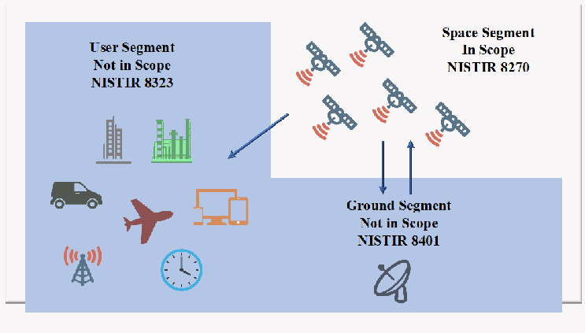
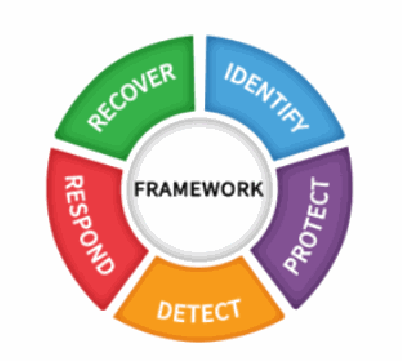
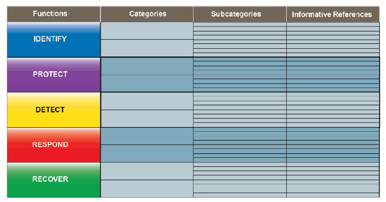
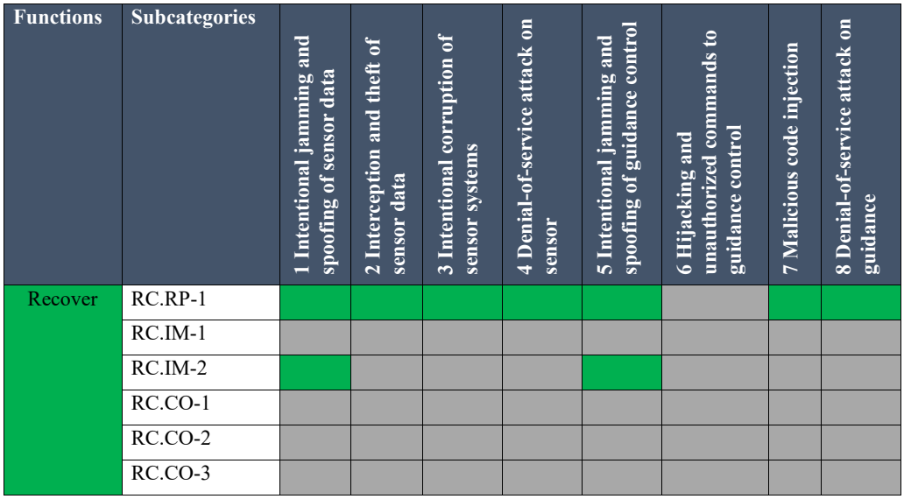

NIST IR 8270 日本語訳
英語タイトル : Introduction to Cybersecurity for Commercial Satellite Operations日本語タイトル : 商用衛星運用のためのサイバーセキュリティ入門
公開日 : 2023-07-25
原文URL : https://csrc.nist.gov/pubs/ir/8270/final
翻訳編集 : 自動生成（有志による非公式の日本語訳）, 原文取得日 : 2026-10-31, 訳文 : 349 / 350 ブロック
[要約] NIST IR 8270 は、商用衛星産業が宇宙でのサイバーセキュリティリスクの管理を開始しようとするにあたり、そのサイバーセキュリティリスク管理の一般的な入門を提供する報告書です。宇宙は本質的にリスクの高い運用環境であるため、商用宇宙に関わるサイバーセキュリティリスクを、他の種類のリスクとともに理解し管理して、安全で成功する運用を確保する必要があるとしています。本文書は、商用衛星インフラストラクチャに対するすべてのサイバーセキュリティリスクを網羅するものではなく、サイバーセキュリティ管理策の実装によってもたらされうる衛星機体へのリスクを検討するものでもありません。意図するところは、基本概念を示し、議論を促し、関連するサイバーセキュリティリスク管理モデルに関する追加情報の参考文献の例を提供することです。
NIST Interagency Report
NIST 省庁間報告書
NIST IR 8270
NIST IR 8270
Introduction to Cybersecurity for Commercial Satellite Operations
商用衛星運用のためのサイバーセキュリティ入門
Matthew Scholl Theresa Suloway
Matthew Scholl Theresa Suloway
This publication is available free of charge from: https://doi.org/10.6028/NIST.IR.8270
本刊行物は次の場所から無償で入手できます: https://doi.org/10.6028/NIST.IR.8270
NIST Interagency Report
NIST 省庁間報告書
NIST IR 8270
NIST IR 8270
Introduction to Cybersecurity for Commercial Satellite Operations
商用衛星運用のためのサイバーセキュリティ入門
Matthew Scholl Computer Security Division Information Technology Laboratory
Matthew Scholl Computer Security Division Information Technology Laboratory
Theresa Suloway The MITRE Corporation
Theresa Suloway The MITRE Corporation
This publication is available free of charge from: https://doi.org/10.6028/NIST.IR.8270
本刊行物は次の場所から無償で入手できます: https://doi.org/10.6028/NIST.IR.8270
July 2023
2023年7月
［米国商務省の紋章。公的な標章のため、この非公式サイトには掲載していません。原本 PDF を参照してください。］
U.S. Department of Commerce Gina M. Raimondo, Secretary
米国商務省 Gina M. Raimondo 長官
National Institute of Standards and Technology
National Institute of Standards and Technology
Laurie E. Locascio, NIST Director and Under Secretary of Commerce for Standards and Technology
Laurie E. Locascio、NIST 所長兼商務次官（標準・技術担当）
Certain commercial equipment, instruments, software, or materials, commercial or non-commercial, are identified in this paper in order to specify the experimental procedure adequately. Such identification does not imply recommendation or endorsement of any product or service by NIST, nor does it imply that the materials or equipment identified are necessarily the best available for the purpose.
本論文では、実験手順を適切に特定するために、商用・非商用を問わず、特定の商用機器、計器、ソフトウェア、または材料を明示しています。このような明示は、NIST がいかなる製品やサービスも推奨または保証していることを意味するものではなく、明示された材料や機器がその目的にとって必ずしも最良のものであることを意味するものでもありません。
There may be references in this publication to other publications currently under development by NIST in accordance with its assigned statutory responsibilities. The information in this publication, including concepts and methodologies, may be used by federal agencies even before the completion of such companion publications. Thus, until each publication is completed, current requirements, guidelines, and procedures, where they exist, remain operative. For planning and transition purposes, federal agencies may wish to closely follow the development of these new publications by NIST.
本刊行物には、NIST が法令により割り当てられた責務に従って現在策定中の他の刊行物への言及が含まれている場合があります。本刊行物の情報は、概念や方法論を含め、そうした関連刊行物が完成する前であっても、連邦政府機関によって利用される場合があります。したがって、各刊行物が完成するまでは、現行の要件、ガイドライン、手順が存在する場合には、それらが引き続き有効です。計画および移行のため、連邦機関は、NIST によるこれらの新しい刊行物の策定状況を注意深く追うことを検討してもよいです。
Organizations are encouraged to review all draft publications during public comment periods and provide feedback to NIST. Many NIST cybersecurity publications, other than the ones noted above, are available at https://csrc.nist.gov/publications.
組織には、パブリックコメント期間中にすべてのドラフト刊行物を確認し、NIST にフィードバックを提供することが奨励されています。上記以外にも、多くの NIST サイバーセキュリティ刊行物が https://csrc.nist.gov/publications で入手できます。
NIST Technical Series Policies
NIST技術シリーズの方針
Copyright, Use, and Licensing Statements
著作権、使用およびライセンスに関する声明
NIST Technical Series Publication Identifier Syntax
NIST技術シリーズ刊行物識別子の構文
Publication History
刊行履歴
Approved by the NIST Editorial Review Board on 2023-06-09
2023-06-09 に NIST Editorial Review Board が承認
How to Cite this NIST Technical Series Publication:
本NIST技術シリーズ刊行物の引用方法:
Scholl M, Suloway T (2023) Introduction to Cybersecurity for Commercial Satellite Operations. (National Institute of Standards and Technology, Gaithersburg, MD), NIST Interagency or Internal Report (IR) NIST IR 8270. https://doi.org/10.6028/NIST.IR.8270
Scholl M, Suloway T (2023) Introduction to Cybersecurity for Commercial Satellite Operations. (National Institute of Standards and Technology, Gaithersburg, MD), NIST Interagency or Internal Report (IR) NIST IR 8270. https://doi.org/10.6028/NIST.IR.8270
Author ORCID iDs
著者の ORCID iD
Matthew Scholl: 0000-0002-6534-3253
Matthew Scholl: 0000-0002-6534-3253
Contact Information
連絡先
ir8270@nist.gov
ir8270@nist.gov
National Institute of Standards and Technology Attn: Computer Security Division, Information Technology Laboratory 100 Bureau Drive (Mail Stop 8930) Gaithersburg, MD 20899-8930
National Institute of Standards and Technology Attn: Computer Security Division, Information Technology Laboratory 100 Bureau Drive (Mail Stop 8930) Gaithersburg, MD 20899-8930
All comments are subject to release under the Freedom of Information Act (FOIA).
すべてのコメントは、情報公開法（FOIA）に基づく公開の対象となります。
Abstract
要旨
Space is a newly emerging commercial critical infrastructure sector that is no longer the domain of only national government authorities. Space is an inherently risky environment in which to operate, so cybersecurity risks involving commercial space – including those affecting commercial satellite vehicles – need to be understood and managed alongside other types of risks to ensure safe and successful operations. This report provides a general introduction to cybersecurity risk management for the commercial satellite industry as they seek to start managing cybersecurity risks in space. This document is by no means comprehensive in terms of addressing all of the cybersecurity risks to commercial satellite infrastructure, nor does it explore risks to satellite vehicles, which may be introduced through the implementation of cybersecurity controls. The intent is to present basic concepts, generate discussions, and provide sample references for additional information on pertinent cybersecurity risk management models.
宇宙は新たに登場した商用の重要インフラ部門であり、もはや国家政府機関だけの領域ではありません。宇宙は本質的に運用リスクの高い環境であるため、商用宇宙に関わるサイバーセキュリティリスク（商用衛星機体に影響するリスクを含む）を、他の種類のリスクと併せて理解し管理し、安全で成功する運用を確保する必要があります。本報告書は、商用衛星産業の事業者が宇宙におけるサイバーセキュリティリスクの管理を開始するにあたり、商用衛星産業向けのサイバーセキュリティリスク管理を概説します。本報告書は、商用衛星インフラに対するすべてのサイバーセキュリティリスクを網羅するものではなく、サイバーセキュリティ管理策の実装によって生じる可能性のある衛星機体へのリスクも検討しません。目的は、基本概念を提示し、議論を促し、関連するサイバーセキュリティリスク管理モデルについてさらに情報を得るための参考資料例を示すことです。
Keywords
キーワード
commercial space satellite operations; cybersecurity; cybersecurity risk management; risk management.
商用宇宙衛星運用; サイバーセキュリティ; サイバーセキュリティリスク管理; リスク管理。
Reports on Computer Systems Technology
コンピュータシステム技術に関する報告書
The Information Technology Laboratory (ITL) at the National Institute of Standards and Technology (NIST) promotes the U.S. economy and public welfare by providing technical leadership for the Nation’s measurement and standards infrastructure. ITL develops tests, test methods, reference data, proof of concept implementations, and technical analyses to advance the development and productive use of information technology. ITL’s responsibilities include the development of management, administrative, technical, and physical standards and guidelines for the cost-effective security and privacy of other than national security-related information in federal information systems.
米国国立標準技術研究所（NIST）の Information Technology Laboratory（ITL）は、国の計測・標準インフラストラクチャに技術的リーダーシップを提供することにより、米国の経済と公共の福祉を促進します。ITL は、情報技術の発展と生産的な利用を推進するために、試験、試験方法、参照データ、概念実証の実装、技術分析を開発します。ITL の責務には、連邦情報システムにおける国家安全保障に関連しない情報について、費用対効果の高いセキュリティとプライバシーを実現するための、管理面、運用管理面、技術面、物理面の標準およびガイドラインの策定が含まれます。
Audience
想定読者
The primary audience for this publication includes chief information officers (CIOs), chief technology officers (CTOs), and risk officers of organizations who are using or plan to use commercial satellite operations and are new to cybersecurity risk management for these operations.
本刊行物の主な想定読者は、商用衛星運用を利用している、または利用を計画しており、これらの運用のサイバーセキュリティリスク管理に不慣れな組織の、最高情報責任者（CIO）、最高技術責任者（CTO）、およびリスク責任者です。
Patent Disclosure Notice
特許開示に関する通知
NOTICE: ITL has requested that holders of patent claims whose use may be required for compliance with the guidance or requirements of this publication disclose such patent claims to ITL. However, holders of patents are not obligated to respond to ITL calls for patents and ITL has not undertaken a patent search in order to identify which, if any, patents may apply to this publication.
通知: ITL は、本刊行物のガイダンスまたは要件への準拠に使用が必要となる可能性のある特許請求項の保有者に対し、当該特許請求項を ITL に開示するよう要請しています。ただし、特許の保有者には ITL の特許募集に回答する義務はなく、ITL は、本刊行物に適用される特許があるとすればそれがどれかを特定するための特許調査を行っていません。
As of the date of publication and following call(s) for the identification of patent claims whose use may be required for compliance with the guidance or requirements of this publication, no such patent claims have been identified to ITL.
刊行日の時点で、本刊行物のガイダンスまたは要件への準拠に使用が必要となる可能性のある特許請求項の特定を求める募集を行った後においても、そのような特許請求項は ITL に特定されていません。
No representation is made or implied by ITL that licenses are not required to avoid patent infringement in the use of this publication.
ITL は、本刊行物の使用にあたって特許侵害を避けるためにライセンスが不要であると表明するものではなく、また、そのことを示唆するものでもありません。
Table of Contents
目次
List of Tables
表の一覧
List of Figures
図の一覧
Fig. 3. Phases of operations — Error! Bookmark not defined.
図 3. 運用のフェーズ — エラー：ブックマークが定義されていません。
Fig. 4. The Cybersecurity Framework — 9
図 4. サイバーセキュリティフレームワーク — 9
Fig. 5. Framework core structure — 9
図 5. フレームワークコアの構造 — 9
Fig. 6. Example of the Identify function from the Framework for Improving Critical Infrastructure Cybersecurity, Version 1.1. — 10
図 6. Framework for Improving Critical Infrastructure Cybersecurity, Version 1.1 の識別機能の例 — 10
Acknowledgments
謝辞
The authors wish to thank all contributors to this publication, especially Karen Scarfone and Greg Witte for their technical contributions, Scott Kordella for his tireless assistance, and Isabel Van Wyk for her outstanding technical editing.
著者らは、本刊行物への貢献者全員に感謝します。特に、技術面での貢献をいただいた Karen Scarfone 氏と Greg Witte 氏、尽力してくださった Scott Kordella 氏、卓越した技術編集をしてくださった Isabel Van Wyk 氏に感謝します。
Executive Summary
エグゼクティブサマリー
As stated in the September 2018 United States National Cyber Strategy, the U.S. Government considers unfettered access to and freedom to operate in space vital to advancing the security, economic prosperity, and scientific knowledge of the Nation. Space Policy Directive 5 (SPD-5) was released in 2020 to address the need for cybersecurity in space systems and directed federal agencies to work with non-government space operators to define and establish cybersecurity-informed norms for space systems. This profile is part of the effort of the National Institute of Standards and Technology (NIST) to support SPD-5 and its goals for securing space.
2018 年 9 月の米国国家サイバー戦略（National Cyber Strategy）に述べられているとおり、米国政府は、宇宙への妨げのないアクセスと宇宙での活動の自由を、国家の安全保障、経済的繁栄、科学的知見の向上にとって不可欠であると考えています。Space Policy Directive 5（SPD-5）は、宇宙システムにおけるサイバーセキュリティの必要性に対処するために 2020 年に発表され、連邦政府機関に対し、非政府の宇宙運用者と協力して、宇宙システム向けのサイバーセキュリティを考慮した規範を定義し確立するよう指示しました。本プロファイルは、SPD-5 とその宇宙の安全確保という目標を支援する、米国国立標準技術研究所（NIST）の取り組みの一部です。
Cyber-related threats to space assets (e.g., commercial satellites) and supporting infrastructure pose increasing risk to this economic promise and commercial space emerging markets. Commercial satellite operations occur in an inherently risky environment. Physical risks to these operations are generally quantifiable and have the most likely potential to adversely impact the businesses that operate commercial satellites, usually in low-earth orbit. While this is the primary risk consideration for satellite operations, continued growth in this new commercial infrastructure allows for opportunities to address cybersecurity risks along with other risk elements.1
宇宙資産（商用衛星など）とそれを支えるインフラストラクチャに対するサイバー関連の脅威は、この経済的な将来性と、新興の商用宇宙市場に対するリスクを高めています。商用衛星の運用は、本質的にリスクの高い環境で行われます。これらの運用に対する物理的リスクは、一般に定量化が可能であり、通常は低軌道で商用衛星を運用する事業者に悪影響を及ぼす可能性が最も高いものです。これは衛星運用における主要なリスク上の考慮事項ですが、この新しい商用インフラストラクチャが成長し続けることで、他のリスク要素とともにサイバーセキュリティリスクにも対処する機会が生まれます。1
Methods for the creation, maintenance, and implementation of a cybersecurity program for many commercial and international markets include products in national and international standard-setting organizations (SSOs), as well as the use of risk management guidance from NIST. NIST risk management guidance includes specific technical references, cybersecurity control catalogues, the Information Technology Risk Management Framework, and the Cybersecurity Framework (CSF).
多くの商用市場および国際市場において、サイバーセキュリティプログラムを作成、維持、実装する方法には、国内および国際の標準化団体（SSO）の成果物と、NIST のリスク管理ガイダンスの利用が含まれます。NIST のリスク管理ガイダンスには、特定の技術文献、サイバーセキュリティ管理策のカタログ、Information Technology Risk Management Framework、およびサイバーセキュリティフレームワーク（CSF）が含まれます。
The intent of this document is to introduce the CSF to commercial space businesses. This includes describing a specific method for applying the CSF to a small portion of commercial satellite operations (e.g., a small sensing satellite), creating an example CSF set of desired security outcomes based on missions and anticipated threats, and describing an abstracted set of cybersecurity outcomes, requirements, and suggested cybersecurity controls.
本文書の意図は、商用宇宙事業者に CSF を紹介することです。これには、CSF を商用衛星運用のごく一部（たとえば小型のセンシング衛星）に適用する具体的な方法の説明、ミッションと想定される脅威に基づいて望ましいセキュリティ成果を示す CSF のセットの例の作成、および、サイバーセキュリティの成果、要件、推奨されるサイバーセキュリティ管理策を抽象化したセットの説明が含まれます。
NIST asks the commercial satellite operations community to use this document as an informative reference to assist in managing cybersecurity risks and to consider how cybersecurity requirements might coexist within space vehicle system requirements. The example requirements listed in this document could be used to create an initial baseline. However, NIST recommends that organizations use this document in coordination with NIST references and applicable SSO materials to create customized cybersecurity outcomes, requirements, and controls to support an organization’s particular business needs and address its individual threat models.
NIST は、商用衛星運用コミュニティに対し、本文書を、サイバーセキュリティリスクを管理するための参考情報として活用し、サイバーセキュリティ要件が宇宙機システムの要件の中でどのように共存しうるかを検討するよう求めています。本文書に挙げた要件例は、初期のベースラインの作成に使用できます。ただし NIST は、組織が本文書を NIST の参考文献および該当する SSO の資料と併せて使用し、自組織固有の事業ニーズを支え、自組織の脅威モデルに対処する、カスタマイズされたサイバーセキュリティ成果、要件、管理策を作成することを推奨します。
This report focuses on uncrewed commercial space vehicles that will not dock with human-occupied spacecraft.
本報告書は、有人宇宙機とドッキングしない無人の商用宇宙機に焦点を当てています。
1. Introduction
1. はじめに
The concept of a commercial space sector has been evolving for some time. In 2007, the U.S. Leadership in Space Commerce Strategic Plan stated,
商用宇宙部門という概念は、かなり前から発展してきました。2007 年の U.S. Leadership in Space Commerce Strategic Plan には、次のように述べられていました。
From television and data communications, to personal navigation, to internet-based satellite imagery, space commerce has enabled countless new economic benefits for our nation. In addition, the expansion of the global market for commercial space capabilities has generated robust worldwide competition. [3]
テレビやデータ通信から、個人向けナビゲーション、インターネットベースの衛星画像に至るまで、宇宙商業は、わが国に数え切れないほどの新たな経済的利益をもたらしてきました。加えて、商用宇宙能力の世界市場が拡大したことで、世界規模の活発な競争が生まれました。[3]
In 2010, the White House National Space Policy stated,
2010 年の White House National Space Policy には、次のように述べられていました。
The term “commercial,” for the purposes of this policy, refers to space goods, services, or activities provided by private sector enterprises that bear a reasonable portion of the investment risk and responsibility for the activity, operate in accordance with typical market-based incentives for controlling cost and optimizing return on investment, and have the legal capacity to offer these goods or services to existing or potential nongovernmental customers. [4]
本政策における「商用」という用語は、民間企業が提供する宇宙の物品、サービス、または活動を指します。それらの民間企業は、当該活動に対する投資リスクと責任の相応の部分を負担し、コスト管理と投資収益の最適化に向けた典型的な市場原理に基づくインセンティブに従って運営され、既存または潜在的な非政府の顧客にこれらの物品やサービスを提供する法的能力を有しています。[4]
Today, space continues to be an evolving commercial sector that is no longer the domain of only national government authorities. The commercial uses of space for research and development, material sciences, communication, and sensing are growing in size, scale, and importance for the future of the U.S. economy. Space is an inherently risky environment in which to operate, so cybersecurity risks involving commercial space need to be understood and managed alongside other types of risks to ensure safe and successful operations.
今日、宇宙は進化を続ける商用部門であり、もはや国家政府機関だけの領域ではありません。研究開発、材料科学、通信、センシングといった宇宙の商業利用は、米国経済の将来にとって、規模、範囲、重要性のいずれの面でも拡大しています。宇宙は本質的にリスクの高い運用環境であるため、商用宇宙に関わるサイバーセキュリティリスクを、他の種類のリスクとともに理解し管理して、安全で成功する運用を確保する必要があります。
1.1. Purpose and Scope
1.1. 目的と範囲
This report provides a general introduction to cybersecurity risk management for the commercial space commerce industry. This document does not apply to federally acquired and operated systems, which are regulated by other authorities. This document is by no means comprehensive in terms of addressing all cybersecurity risks to commercial space infrastructure, nor does it explore how cybersecurity solutions might introduce risk to a space vehicle. The intent is to introduce basic concepts, generate discussions, clear confusion, and provide references for additional information on pertinent cybersecurity risk management concepts. This report focuses on uncrewed commercial space vehicles that will not dock with human-occupied spacecraft.
本報告書は、商用宇宙産業向けのサイバーセキュリティリスク管理の一般的な入門を提供します。本文書は、別の機関が規制する、連邦政府が調達し運用するシステムには適用されません。本文書は、商用宇宙インフラストラクチャに対するすべてのサイバーセキュリティリスクを網羅するものではまったくなく、サイバーセキュリティ対策が宇宙機にどのようにリスクをもたらしうるかを検討するものでもありません。意図するところは、基本概念を紹介し、議論を促し、混乱を解消し、関連するサイバーセキュリティリスク管理の概念に関する追加情報の参考文献を提供することです。本報告書は、有人宇宙機とドッキングしない無人の商用宇宙機に焦点を当てています。
The Cybersecurity Policy for Space Systems Used to Support National Security Missions (CNSSP-12) [7] governs the acquisition of national security space systems. The CSF is non-regulatory, and the scope applies to commercial entities that operate space vehicles and payloads that are not owned, operated, controlled, or leased by the U.S. Government.
Cybersecurity Policy for Space Systems Used to Support National Security Missions（CNSSP-12）[7] は、国家安全保障用の宇宙システムの調達を規律しています。CSF は規制を目的としたものではなく、その適用範囲は、米国政府が所有、運用、管理、またはリースしていない宇宙機とペイロードを運用する商用事業体です。
1.2. Report Structure
1.2. 報告書の構成
This report is organized into the following sections and appendices:
本報告書は、次の節と付録で構成されています。
•Section 2 provides a notional, conceptual, high-level architectural view of commercial satellite operations.
•第 2 節では、商用衛星運用の想定上の、概念的な高水準アーキテクチャを示します。
•Section 3 describes the steps of the Cybersecurity Framework.
•第 3 節では、サイバーセキュリティフレームワークのステップを説明します。
•Section 4 provides a notional example of how a satellite organization might apply the Cybersecurity Framework steps to their space vehicles.
•第 4 節では、衛星を扱う組織が、自組織の宇宙機にサイバーセキュリティフレームワークのステップをどのように適用しうるかの仮想例を示します。
•Appendix A provides examples of regulations that may be relevant to commercial satellite operations.
•付録 A では、商用衛星運用に関連しうる規制の例を示します。
•Appendix B lists the acronyms used in this report.
•付録 B では、本報告書で使用する頭字語を挙げます。
2. Conceptual High-Level Architecture of Satellite Operations
2. 衛星運用の概念的な高水準アーキテクチャ
This section provides a notional, conceptual, high-level architectural view of commercial, uncrewed space operations. This view can be helpful in understanding, assigning, and managing cybersecurity requirements and risks associated with different owners and operators of different parts of the architecture. This architecture can be under the sole control of one system owner or shared among numerous public, commercial, and private owners.
本節では、商用の無人宇宙運用について、想定上の概念的な高水準アーキテクチャを示します。この構成は、アーキテクチャの各部分の所有者や運用者に関連するサイバーセキュリティ要件とリスクを理解し、割り当て、管理するうえで役立ちます。このアーキテクチャは、単一のシステム所有者の管理下にある場合もあれば、多数の公的、商業、民間の所有者によって共有される場合もあります。
2.1. Space Architecture Segments
2.1. 宇宙アーキテクチャのセグメント
Once in operation, space vehicles share an ecosystem that has no national and few natural boundaries and where safety is a communal concern. For the purposes of this paper and to facilitate subsequent discussions in setting, expressing, or meeting cybersecurity requirements, NIST notionally defines the scope of a commercial space operations architecture to include the following segments.
宇宙機は、運用が始まると、国境がなく、自然の境界もほとんどなく、安全が共同の関心事となるエコシステムを共有します。本稿の目的上、またサイバーセキュリティ要件の設定、表明、達成に関するその後の議論を円滑にするため、NIST は、商用宇宙運用アーキテクチャの範囲を、次のセグメントを含むものと仮想的に定義します。
2.1.1. Space Segment:
2.1.1. 宇宙セグメント:
The space vehicle or satellite consists of the platform and one or more payloads. The bus consists of the components of the vehicle associated with the “flying of the satellite,” such as power, structure, attitude control system, processing and command control, and telemetry. The spacecraft can carry many specialized payloads to conduct missions, including remote sensing and communications. The bus and the payload generally combine to form the satellite.
宇宙機または衛星は、プラットフォームと一つ以上のペイロードで構成されます。バス部は、電力、構造、姿勢制御システム、処理およびコマンド制御、テレメトリなど、「衛星の飛行」に関連する機体の構成要素で構成されます。宇宙機は、リモートセンシングや通信などのミッションを遂行するために、多くの専用ペイロードを搭載できます。バス部とペイロードは、一般に組み合わさって衛星を構成します。

宇宙運用の概念的な高水準アーキテクチャを示す図です。右上は「Space Segment / In Scope / NISTIR 8270」で、複数の衛星を示します。左は「User Segment / Not in Scope / NISTIR 8323」で、建物、バン、航空機、コンピューター画面、電波塔、時計を示します。右下は「Ground Segment / Not in Scope / NISTIR 8401」で、パラボラアンテナを示します。矢印が衛星とユーザーセグメントを結び、衛星と地上セグメントを双方向に結びます。
Fig. 1. Major parts of the conceptual high-level architecture of space operations
図 1. 宇宙運用の概念的な高水準アーキテクチャの主要部分
Figure 1 reflects the major parts of the conceptual high-level architecture of satellite operations. This architecture is for uncrewed spacecraft and does not include cybersecurity requirements for human space systems, human spacecraft, or systems that will dock with human systems and/or lunar landers.
図 1 は、衛星運用の概念的な高水準アーキテクチャの主要部分を示しています。このアーキテクチャは無人の宇宙機を対象としており、有人宇宙システム、有人宇宙機、または有人システムや月着陸船とドッキングするシステムのサイバーセキュリティ要件は含みません。
2.1.2. Key Considerations and Communications
2.1.2. 主要な考慮事項と通信
Link sub-segment. Command and control are the signaling operations sent to the satellite to conduct a mission function, perform diagnostics, reset the state of the equipment, send updates, and/or activate the propulsion systems of the vehicle. Command and control operations are generated on the ground and can be transmitted to the vehicle in several ways. The commands can be sent via a fiber link to a remote ground station, which then transmits the commands via a direct radio frequency (RF) or optical link to the satellite from the ground. The second method uses a set of space relays, where the original commands are sent from the ground via RF or optical link to a relay satellite and then transmitted via RF or optical link to the target satellite. Finally, mobile devices and technologies not associated with a specific ground operations location, such as intra-vehicle communications, can be used to deliver commands to a satellite or its payload.
リンクサブセグメント。 コマンド・アンド・コントロールとは、ミッション機能の実行、診断の実施、機器の状態のリセット、更新の送信、または機体の推進システムの起動のために衛星へ送られる信号送信操作です。コマンド・アンド・コントロール操作は地上で生成され、いくつかの方法で機体に送信できます。コマンドはファイバーリンクを介して遠隔地上局に送られ、その後、地上局から直接の無線周波数（RF）リンクまたは光リンクを介して衛星に送信できます。2番目の方法では一連の宇宙リレーを使用し、元のコマンドを地上からRFリンクまたは光リンクを介して中継衛星に送り、次にRFリンクまたは光リンクを介して目標衛星に送信します。最後に、機体内通信など、特定の地上運用拠点に関連しないモバイルデバイスや技術を使って、衛星またはそのペイロードにコマンドを届けることもできます。
Internal satellite cybersecurity sub-segment. Internal vehicle cybersecurity refers to the cybersecurity capabilities of the satellite vehicle itself, including its ability to protect itself against cybersecurity threats, detect threat actions, respond to cybersecurity attacks, and recover when necessary. These capabilities should be designed as part of security development and integrated early in the system life cycle. Often, internal vehicle cybersecurity is the primary responsibility of small commercial satellite owners and operators, and much of the rest of the architecture is outsourced to external suppliers and providers. Internal vehicle cybersecurity is a feature owned by a satellite in the space segment.
衛星内部サイバーセキュリティサブセグメント。 機体内部のサイバーセキュリティとは、衛星機体自体のサイバーセキュリティ能力を指し、サイバーセキュリティ上の脅威から自らを防御し、脅威行為を検知し、サイバーセキュリティ攻撃に対応し、必要に応じて復旧する能力を含みます。これらの能力は、セキュリティ開発の一環として設計し、システムライフサイクルの早期に組み込むべきです。小規模な商用衛星の所有者や運用者にとっては、機体内部のサイバーセキュリティが主な責任であり、アーキテクチャのそれ以外の大部分を外部のサプライヤーやプロバイダーに委託していることが多くあります。機体内部のサイバーセキュリティは、宇宙セグメントにある衛星が所有する機能です。
Satellite-to-satellite communications sub-segment. Communications between operational satellites for mission functions – such as command and control, networking of compute capabilities, redundancy of operations and mission functions, tracking, and communications – are known as inter-vehicle communications. Therefore, the integrity, availability, and confidentiality of these communications are critical. Satellite-to-satellite communications is a capability of a satellite in the space segment and can be for both docked systems as well as space stations, which are composed of separate operational vehicles.
衛星間通信サブセグメント。 コマンドと制御、計算能力のネットワーク化、運用およびミッション機能の冗長化、追跡、通信といったミッション機能のために、運用中の衛星の間で行われる通信は、機体間通信として知られています。したがって、これらの通信の完全性、可用性、機密性は極めて重要です。衛星間通信は、宇宙セグメントにある衛星の能力であり、ドッキングしたシステムにも、個別の運用機体で構成される宇宙ステーションにも該当します。
![Diagram of the major communication links used in space systems. On the left, a dashed box (“Facilities may be co-located.”) contains the “Ground Control Segment”: a “Mission Operations Center” with “Bus Telemetry and Telecommand”, and a “Payload Control Center” with “Payload Telemetry and Telecommand”, separated by a firewall. A “Link Sub-segment” column carries “bus command and control” to the “Satellite Bus Interface” and “payload command and control” to the “Payload Interface” of a satellite. Each of two satellites contains a “Satellite Bus Interface”, a firewall for “telemetry and telecommand filtering”, “Internal Satellite Communication”, and a “Payload Interface” with “Processing HSL”. A “Satellite-to-satellite Communication” column links the bus and payload interfaces of the two satellites, including crossed links.](assets/ir-8270/p0013-figure-02.png)
宇宙システムで使われる主な通信リンクを示す図です。左側の破線の枠（「Facilities may be co-located.」）に「Ground Control Segment」があり、「Bus Telemetry and Telecommand」を持つ「Mission Operations Center」と、「Payload Telemetry and Telecommand」を持つ「Payload Control Center」がファイアウォールで隔てられています。「Link Sub-segment」の列が、「bus command and control」を衛星の「Satellite Bus Interface」へ、「payload command and control」を「Payload Interface」へ運びます。2基の衛星はそれぞれ「Satellite Bus Interface」、「telemetry and telecommand filtering」のファイアウォール、「Internal Satellite Communication」、「Processing HSL」を含む「Payload Interface」を持ちます。「Satellite-to-satellite Communication」の列が、2基の衛星のバスとペイロードのインターフェースを交差するリンクも含めて結びます。
Fig. 2. Major communication links used in space systems
図 2. 宇宙システムで使用される主な通信リンク
2.1.3. Other Space Architecture Segments
2.1.3. その他の宇宙アーキテクチャのセグメント
Ground segment. Ground operations are terrestrial-based activities that can be automated or conducted by human operators. They often include some or all of the space operations (i.e., station keeping and payload commanding) and can be co-located with launch facilities or at a separate set of facilities. Ground operations can be outsourced in whole or in part. Even at launch, the payload operator may not be collocated with the launch facility.
地上セグメント。 地上運用は、地上を拠点とする活動であり、自動化される場合も、人間のオペレーターが実施する場合もあります。地上運用には、宇宙運用の一部または全部（すなわち、軌道保持とペイロードへのコマンド送信）が含まれることが多く、打ち上げ施設と同じ場所にある場合も、別の施設群にある場合もあります。地上運用は、全体または一部を委託できます。打ち上げ時でさえ、ペイロードの運用者が打ち上げ施設と同じ場所にいるとは限りません。
User segment. These are consumers, such as Global Positioning Systems (GPS) receivers, satellite phone users, satellite Television receivers, vehicles, 5G users, industrial systems, mobile devices, and aircraft.
ユーザーセグメント。 全地球測位システム（GPS）受信機、衛星電話の利用者、衛星テレビの受信機、車両、5G の利用者、産業システム、モバイルデバイス、航空機などの消費者です。
2.2. Spacecraft Vehicle Life Cycle Phases
2.2. 宇宙機のライフサイクルフェーズ
The space vehicle experiences different phases of operations, each of which may have unique risks that need to be addressed. This document focuses on the operations phase of the satellite life cycle.
宇宙機は、運用のさまざまなフェーズを経験し、それぞれに対処すべき固有のリスクがある場合があります。本文書は、衛星のライフサイクルのうち運用フェーズに焦点を当てます。
2.2.1. Operational Phase
2.2.1. 運用フェーズ
Operations: Sensing, information processing, data acquisition, and communication. The satellite conducts a mission operation that involves some function or combination of functions for sensing, information processing, data acquisition, and communication. These are functional requirements directly related to the business mission of the satellite and are conducted by the satellite and/or its payloads.
運用: センシング、情報処理、データ取得、通信。 衛星は、センシング、情報処理、データ取得、通信のいずれかの機能、またはそれらの組み合わせを伴うミッション運用を行います。これらは衛星の事業ミッションに直接関連する機能要件であり、衛星やそのペイロードが実行します。
2.2.2. Other Phases
2.2.2. その他のフェーズ
![Illustration of the phases of operations of a spacecraft, in six columns labeled “Design/ Development”, “Prelaunch/ Manufacturing”, “Launch”, “On Orbit Check Out”, “Operation”, and “Decommissioning”. The pictures show satellite design drawings, satellite assembly, a rocket on a launch pad with a “Launch Control Center”, a satellite rising into orbit over the Earth, an operating satellite communicating with a “Mission Control Center” and its dish antenna, and a satellite descending to re-enter the atmosphere.](assets/ir-8270/p0014-figure-01.png)
宇宙機の運用の段階を示す図で、「設計／開発」「打ち上げ前／製造」「打ち上げ」「軌道上チェックアウト」「運用」「廃止」の6列からなります。衛星の設計図、衛星の組み立て、「Launch Control Center」を伴う発射台上のロケット、地球の上空へ上昇して軌道に入る衛星、「Mission Control Center」とそのアンテナと通信する運用中の衛星、大気圏へ再突入する衛星が描かれています。
Fig. 3. Phases of operations
図 3. 運用のフェーズ
Design and development. Is it important to have robust software and hardware design processes where developers add in security and perform proper security testing. Manufactures and companies should be aware of the long lifetime of some spacecraft and build in flexibility to address cyber threats over the lifetime of the vehicle. Specific attention should be placed on the cryptographic modules that may potentially allow for upgrades for post-quantum cryptography. Current operationally deployed systems should also consider using compensating controls to achieve outcomes if the legacy technologies are insufficient.
設計と開発。 開発者がセキュリティを組み込み、適切なセキュリティテストを実施する、堅牢なソフトウェアおよびハードウェアの設計プロセスを持つことが重要です。製造者や企業は、一部の宇宙機の寿命が長いことを認識し、機体の寿命を通じてサイバー脅威に対処できる柔軟性を組み込むべきです。耐量子暗号へのアップグレードを可能にしうる暗号モジュールには、特に注意を払うべきです。現在運用中に展開されているシステムでも、レガシー技術が不十分な場合に成果を達成するため、代替の管理策の利用を検討すべきです。
Assembly. Spacecraft components are procured from across the world and brought together to allow the spacecraft to perform various missions. This step should include tests to validate the functions of components and software, including cybersecurity functionality. The hardware, firmware, and software supply chain are, therefore, a critical component of cybersecurity. Once vehicles are launched, the ability to modify hardware is limited, if not impossible. Hardware implants or vulnerabilities are difficult to mitigate and can have a foundational impact on cybersecurity. However, software on a space vehicle can often be patched or modified from the ground. To deter or minimize supply chain attacks, organizations should understand the security and privacy policies of their suppliers and communicate their requirements to their suppliers and their capabilities to their customers. The profile can be a tool to help manage the supply chain, and the importance of the acquisition process cannot be stressed enough (e.g., using trusted vendors, designing/embedding required security).
組立。 宇宙機の構成要素は世界中から調達され、一つに組み合わされて、宇宙機がさまざまなミッションを遂行できるようにします。このステップには、サイバーセキュリティ機能を含め、構成要素とソフトウェアの機能を検証する試験を含めるべきです。したがって、ハードウェア、ファームウェア、ソフトウェアのサプライチェーンは、サイバーセキュリティの重要な構成要素です。機体が打ち上げられた後は、ハードウェアを変更する能力は、不可能とまではいかなくても限られます。ハードウェアのインプラントや脆弱性は緩和が難しく、サイバーセキュリティに根本的な影響を及ぼす可能性があります。しかし、宇宙機のソフトウェアは、地上からパッチ適用や変更ができることが多くあります。サプライチェーン攻撃を抑止または最小化するため、組織はサプライヤーのセキュリティおよびプライバシーのポリシーを理解し、自組織の要件をサプライヤーに、自組織の能力を顧客に伝えるべきです。プロファイルはサプライチェーンの管理に役立つツールとなり得ます。また、調達プロセスの重要性は、いくら強調してもしすぎることはありません（例: 信頼できるベンダーの利用、必要なセキュリティの設計・組み込み）。
Pre-launch. This is a critical time for the vehicle during which operators will test RF links and utilize an umbilical cord to the launch vehicle for diagnostics and telemetry. It is important for operators to understand the connectivity and access that the various satellite health and status monitoring systems have during pre-launch and to ensure the cybersecurity of the test environment. This phase also includes transit to the launch facility from the factory and storage at the launch facility before launch – activities that should be controlled for physical access to the vehicle.
打ち上げ前。 これは機体にとって重要な時期であり、この間に運用者は RF リンクを試験し、診断とテレメトリのために打ち上げロケットへのへその緒状のケーブル（アンビリカル）を利用します。運用者は、打ち上げ前の期間に、衛星のさまざまな健全性・状態の監視システムが持つ接続性とアクセスを理解し、試験環境のサイバーセキュリティを確保することが重要です。このフェーズには、工場から打ち上げ施設への輸送、および打ち上げ前の打ち上げ施設での保管も含まれます。これらは、機体への物理的なアクセスを管理すべき活動です。
Launch. Launch is the phase of space commerce that entails moving the space system to its operational environment (e.g., from a pad, rack, ramp, or other device or installation). Launch can include launch devices and installations, fuel operations and storage, and launch safety and destruct systems. Launch can have significant overlap with ground operations, and the two are often combined. However, due to the current cost, complexity, and safety concerns associated with launch, it is often outsourced for small commercial satellites.
打ち上げ。 打ち上げは、宇宙システムを運用環境へ移すことを伴う宇宙商業のフェーズです（例：発射台、ラック、ランプ、その他の装置または設備から）。打ち上げには、打ち上げ装置と設備、燃料の取り扱いと貯蔵、打ち上げの安全・破壊システムが含まれる場合があります。打ち上げは地上運用と大きく重なる場合があり、両者はしばしば一体として扱われます。ただし、打ち上げに伴う現在のコスト、複雑さ、安全上の懸念があるため、小型の商用衛星では打ち上げが委託されることが多くあります。
On-orbit checkout. Once the satellite is placed into orbit, the satellite must beacon and establish a link to the ground command and control system. The satellite typically undergoes several checks to ensure that the systems have survived launch and are operational. The satellite will then enter operational status. Another critical aspect during this time is that command and control of the satellite transfers from the development organization to the operating organization. This phase of the satellite mission should remain a focus from a cybersecurity perspective due to the change in custody and the visibility of these events, which can potentially provide opportunities for malicious actors.
軌道上チェックアウト。 衛星は、軌道に投入されると、ビーコンを発信し、地上のコマンド・制御システムへのリンクを確立しなければなりません。衛星は通常、システムが打ち上げを乗り越えて動作していることを確認するため、いくつかのチェックを受けます。その後、衛星は運用ステータスに入ります。この期間のもう一つの重要な側面は、衛星のコマンドと制御が、開発組織から運用組織へ移管されることです。衛星ミッションのこのフェーズは、管理主体の変更と、これらのイベントの可視性が悪意ある行為者に機会を与えうることから、サイバーセキュリティの観点から引き続き重点を置くべきです。
Decommissioning. The decommissioning of a commercial satellite is a high-risk endeavor with requirements for the post-mission disposition of satellites. General good practices include maintaining control of orbital debris released during normal operations, minimizing debris generated by accidental explosions, and ensuring the post-mission disposal of space structures, either by re-entry and burn-up in Earth’s atmosphere or by moving the structure to the graveyard orbit. Decommissioning other areas of the space operations architecture can include the need to handle and dispose of sensitive materials, intellectual property, and hazardous materials.
廃止。 商用衛星の廃止は、衛星のミッション終了後の処分に関する要件を伴う、リスクの高い取り組みです。一般的な優良事例には、通常運用中に放出される軌道上のデブリを管理下に置くこと、偶発的な爆発によって生じるデブリを最小限に抑えること、そして、地球大気圏への再突入と燃焼、または構造物の墓場軌道への移動のいずれかによって、宇宙構造物のミッション終了後の処分を確実に行うことが含まれます。宇宙運用アーキテクチャの他の領域を廃止する場合には、機微な物質、知的財産、有害物質の取り扱いと処分の必要が生じることがあります。
The cybersecurity risks of decommissioning should consider appropriate confidentiality, integrity, and availability considerations, as well as related physical threats to commercial satellite systems once decommissioned. Industry practices – such as following International Organisation for Standards (ISO) standards for decommissioning, international treaty obligations, and domestic regulations – should also be considered.
廃止に伴うサイバーセキュリティリスクについては、廃止後の商用衛星システムに対する関連する物理的脅威とともに、適切な機密性、完全性、可用性に関する考慮事項を検討すべきです。廃止に関する International Organisation for Standards（ISO）標準、国際条約上の義務、国内規制に従うといった業界の慣行も考慮すべきです。
3. An Introduction to the Cybersecurity Framework
3. サイバーセキュリティフレームワークの紹介
The Cybersecurity Framework was developed in reponse to Executive Order 13636, Improving Critical Infrastructure Cybersecurity [17]. The framework is based on a risk management approach to cybersecurity that can be tailored to various industries. It provides a common terminology and methodology that can be implemented by organizations based on their resources and business needs. The Cybersecurity Framework consists of five functions: identify, protect, detect, respond, and recover. The functions are shown in a circular format to communicate to the user that cybersecurty is an iterative and continuous process that enables an organization to navigate the changing landscape of cybersecurity risks. Figure 4 shows a visual representation of the CSF and its functions.
サイバーセキュリティフレームワークは、大統領令 13636『Improving Critical Infrastructure Cybersecurity』[17] を受けて策定されました。このフレームワークは、さまざまな業界に合わせて調整できる、サイバーセキュリティへのリスク管理アプローチに基づいています。共通の用語と方法論を提供し、組織が自らのリソースと事業ニーズに基づいて実装できます。サイバーセキュリティフレームワークは、識別、防御、検知、対応、復旧の 5 つの機能で構成されます。これらの機能は、サイバーセキュリティが反復的かつ継続的なプロセスであり、組織がサイバーセキュリティリスクの変化する状況に対応できるようにするものであることをユーザーに伝えるため、円環状に示されています。図 4 は、CSF とその機能を視覚的に表したものです。

サイバーセキュリティフレームワークを示す円形の図です。中央に「FRAMEWORK」があり、その周りを「IDENTIFY」「PROTECT」「DETECT」「RESPOND」「RECOVER」の5つの色分けされた区画が囲みます。
Fig. 4. The Cybersecurity Framework
図 4. サイバーセキュリティフレームワーク
In addition to the five primary functions of the Cybersecurity Framework, there are categories and subcategories that express cybersecurity outcomes and informative references to assist in the implementation of controls that can achieve those outcomes, as shown in Fig. 5.
サイバーセキュリティフレームワークの 5 つの主要な機能に加えて、図 5 に示すように、サイバーセキュリティの成果を表すカテゴリとサブカテゴリ、およびそれらの成果を達成できる管理策の実装を支援する参考情報があります。

フレームワークコアの構造を示す図です。「Functions」「Categories」「Subcategories」「Informative References」の列見出しを持つ格子です。Functions の列に「IDENTIFY」「PROTECT」「DETECT」「RESPOND」「RECOVER」が並び、各機能に複数のカテゴリのセル、各カテゴリに複数のサブカテゴリの行、各サブカテゴリの行に参考情報があります。
Fig. 5. Framework core structure
図 5. フレームワークコアの構造
To help explain the context of the categories, subcategories, and informative references, an example of the first row of Identify with the category “asset management” is provided in Fig. 6. Each category has associated subcategories that describe specific outcomes. The last column of information includes references for that particular outcome that cite applicable NIST and SSO publications.
カテゴリ、サブカテゴリ、参考情報の文脈を説明するため、カテゴリ「資産管理」を持つ識別の最初の行の例を図 6 に示します。各カテゴリには、具体的な成果を記述する関連サブカテゴリがあります。情報の最後の列には、その成果に関する参考情報が含まれ、該当する NIST および SSO の刊行物を引用しています。
The following section highlights specific NIST 800-53, Revision 4 and Revision 5 [2], controls that map to the subcategories for the notional scenario.
次の節では、仮想シナリオのサブカテゴリに対応付けられる、NIST 800-53 の Revision 4 および Revision 5 [2] の具体的な管理策を強調して示します。
![Table-style example of the Identify function from the Framework Core, with columns “Function”, “Category”, “Subcategory”, and “Informative References”. Function: “IDENTIFY (ID)”. Category: “Asset Management (ID.AM): The data, personnel, devices, systems, and facilities that enable the organization to achieve business purposes are identified and managed consistent with their relative importance to business objectives and the organization’s risk strategy.” Subcategories and their informative references: “ID.AM-1: Physical devices and systems within the organization are inventoried” — CCS CSC 1; COBIT 5 BAI09.01, BAI09.02; ISA 62443-2-1:2009 4.2.3.4; ISA 62443-3-3:2013 SR 7.8; ISO/IEC 27001:2013 A.8.1.1, A.8.1.2; NIST SP 800-53 Rev. 4 CM-8. “ID.AM-2: Software platforms and applications within the organization are inventoried” — CCS CSC 2; COBIT 5 BAI09.01, BAI09.02, BAI09.05; ISA 62443-2-1:2009 4.2.3.4; ISA 62443-3-3:2013 SR 7.8; ISO/IEC 27001:2013 A.8.1.1, A.8.1.2; NIST SP 800-53 Rev. 4 CM-8. “ID.AM-3: Organizational communication and data flows are mapped” — CCS CSC 1; COBIT 5 DSS05.02; ISA 62443-2-1:2009 4.2.3.4; ISO/IEC 27001:2013 A.13.2.1; NIST SP 800-53 Rev. 4 AC-4, CA-3, CA-9, PL-8. “ID.AM-4: External information systems are catalogued” — COBIT 5 APO02.02; ISO/IEC 27001:2013 A.11.2.6; NIST SP 800-53 Rev. 4 AC-20, SA-9. “ID.AM-5: Resources (e.g., hardware, devices, data, and software) are prioritized based on their classification, criticality, and business value” — COBIT 5 APO03.03, APO03.04, BAI09.02; ISA 62443-2-1:2009 4.2.3.6; ISO/IEC 27001:2013 A.8.2.1; NIST SP 800-53 Rev. 4 CP-2, RA-2, SA-14. “ID.AM-6: Cybersecurity roles and responsibilities for the entire workforce and third-party stakeholders (e.g., suppliers, customers, partners) are established” — COBIT 5 APO01.02, DSS06.03; ISA 62443-2-1:2009 4.3.2.3.3; ISO/IEC 27001:2013 A.6.1.1; NIST SP 800-53 Rev. 4 CP-2, PS-7, PM-11.](assets/ir-8270/p0017-figure-01.png)
フレームワークコアの Identify 機能の例を表形式で示す図です。列は「Function」「Category」「Subcategory」「Informative References」です。機能は「IDENTIFY (ID)」です。カテゴリは「Asset Management (ID.AM): The data, personnel, devices, systems, and facilities that enable the organization to achieve business purposes are identified and managed consistent with their relative importance to business objectives and the organization’s risk strategy.」（資産管理：組織が事業目的を達成できるようにするデータ、人員、デバイス、システム、施設を特定し、事業目標と組織のリスク戦略に対する相対的な重要度に応じて管理する）です。サブカテゴリと参考情報は次のとおりです。ID.AM-1（組織内の物理デバイスとシステムの目録を作成する）：CCS CSC 1、COBIT 5 BAI09.01, BAI09.02、ISA 62443-2-1:2009 4.2.3.4、ISA 62443-3-3:2013 SR 7.8、ISO/IEC 27001:2013 A.8.1.1, A.8.1.2、NIST SP 800-53 Rev. 4 CM-8。ID.AM-2（組織内のソフトウェアプラットフォームとアプリケーションの目録を作成する）：CCS CSC 2、COBIT 5 BAI09.01, BAI09.02, BAI09.05、ISA 62443-2-1:2009 4.2.3.4、ISA 62443-3-3:2013 SR 7.8、ISO/IEC 27001:2013 A.8.1.1, A.8.1.2、NIST SP 800-53 Rev. 4 CM-8。ID.AM-3（組織内の通信とデータの流れを図示する）：CCS CSC 1、COBIT 5 DSS05.02、ISA 62443-2-1:2009 4.2.3.4、ISO/IEC 27001:2013 A.13.2.1、NIST SP 800-53 Rev. 4 AC-4, CA-3, CA-9, PL-8。ID.AM-4（外部の情報システムの一覧を作成する）：COBIT 5 APO02.02、ISO/IEC 27001:2013 A.11.2.6、NIST SP 800-53 Rev. 4 AC-20, SA-9。ID.AM-5（リソース（ハードウェア、デバイス、データ、ソフトウェアなど）に分類、重要度、事業価値に基づいて優先順位を付ける）：COBIT 5 APO03.03, APO03.04, BAI09.02、ISA 62443-2-1:2009 4.2.3.6、ISO/IEC 27001:2013 A.8.2.1、NIST SP 800-53 Rev. 4 CP-2, RA-2, SA-14。ID.AM-6（全従業員と第三者の利害関係者（供給者、顧客、パートナーなど）のサイバーセキュリティの役割と責任を定める）：COBIT 5 APO01.02, DSS06.03、ISA 62443-2-1:2009 4.3.2.3.3、ISO/IEC 27001:2013 A.6.1.1、NIST SP 800-53 Rev. 4 CP-2, PS-7, PM-11。
Fig. 6. Example of the Identify function from the Framework for Improving Critical Infrastructure Cybersecurity, Version 1.1.
図 6. Framework for Improving Critical Infrastructure Cybersecurity, Version 1.1 の識別機能の例
What is a profile?
プロファイルとは何か
A profile is a set of subcategories from the framework that is selected by an organization to represent either their current cybersecurity state (i.e., current profile) or their desired cybersecurity state (i.e., target profile). The gap analysis between a current and target profile can help an organization develop an action plan to enhance their cybersecurity posture.
プロファイルとは、組織が自らの現在のサイバーセキュリティの状態（すなわち現在のプロファイル）または望ましいサイバーセキュリティの状態（すなわち目標プロファイル）のいずれかを表すために選択した、フレームワークのサブカテゴリの集合です。現在のプロファイルと目標プロファイルのギャップ分析は、組織がサイバーセキュリティ態勢を強化するための行動計画を策定するのに役立ちます。
4. Creating a Cybersecurity Program for Space Operations
4. 宇宙運用向けサイバーセキュリティプログラムの作成
The application of high-level processes from the Cybersecurity Framework may help satellite operators with the creation and maintenance of a cybersecurity program. While the overall process is applicable to all parts of commercial space architectures and phases of operation, this document also provides a notional example of applying the CSF to generating cybersecurity requirements for the satellite during sensing, information processing, data acquisition, and communications to illustrate how these steps are used and to derive example cybersecurity outcomes, requirements, and controls for this specific use.
サイバーセキュリティフレームワークの高水準のプロセスを適用することで、衛星運用者がサイバーセキュリティプログラムを作成し維持しやすくなる場合があります。全体のプロセスは商用宇宙アーキテクチャのあらゆる部分と運用のあらゆるフェーズに適用できますが、本文書では、これらのステップがどのように使われるかを示し、この特定の用途におけるサイバーセキュリティの成果、要件、管理策の例を導出するため、センシング、情報処理、データ取得、通信の間の衛星に対するサイバーセキュリティ要件の生成に CSF を適用する仮想例も示します。
4.1. Using the Cybersecurity Framework to Develop a Profile
4.1. サイバーセキュリティフレームワークを用いたプロファイルの作成
The Cybersecurity Framework can be used to develop a profile that helps organizations communicate their cybersecurity posture and organize cybersecurity-related tasks and activities. The Framework profile can be used to communicate cybersecurity requirements to suppliers and to manage how risk is mitigated, managed, transferred, or accepted when outsourcing one or more aspects of space operations. Commercial space operations can be hybrid modes with few organizations owning or controlling all parts. Therefore, communicating clear expectations, capabilities, and requirements across the different owners of the space operations scope is critical to understanding and managing cybersecurity risks. Notably, the risk to an organization is impacted by changes in that organization’s reliance on the assets, an adversary’s capability, and an adversary’s intent. Effective risk management requires the steps presented in this section to be visited and revisited on a regular basis.
サイバーセキュリティフレームワークを使うと、組織が自らのサイバーセキュリティ態勢を伝達し、サイバーセキュリティ関連のタスクや活動を整理するのに役立つプロファイルを作成できます。フレームワークのプロファイルは、サイバーセキュリティ要件をサプライヤーに伝達するために、また宇宙運用の一つ以上の側面を委託する際に、リスクをどのように緩和、管理、移転、または受容するかを管理するために使用できます。商用宇宙運用はハイブリッド形態となりうるため、すべての部分を所有または管理する組織はほとんどありません。したがって、宇宙運用の範囲に含まれるさまざまな所有者の間で、明確な期待、能力、要件を伝達することは、サイバーセキュリティリスクを理解し管理するうえで極めて重要です。特に、組織に対するリスクは、その組織の資産への依存度、敵対者の能力、敵対者の意図の変化によって影響を受けます。効果的なリスク管理には、本節に示すステップを定期的に繰り返し見直すことが必要です。
Step 1: Establish scope and priorities. It is most effective to address cybersecurity in the earliest stages of building the components of the space architecture and embedding risk-reducing measures that meet organizational mission and business objectives into the design and supply chain. However, many commercial satellite operators have already deployed several generations of their vehicles, and many parts of an architecture are in use.
ステップ 1: 範囲と優先順位を確立します。 サイバーセキュリティへの対処は、宇宙アーキテクチャの構成要素を構築する最も早い段階で行い、組織のミッションと事業目標に合致するリスク低減策を設計とサプライチェーンに組み込むのが最も効果的です。しかし、多くの商用衛星運用者はすでに機体を何世代も展開しており、アーキテクチャの多くの部分が使用されています。
For companies that have already begun deployment, a current cybersecurity profile should be created to describe what cybersecurity outcomes are being achieved. A target profile can be created to describe the outcomes needed to meet the cybersecurity risk management goals of the organization. A gap analysis of the differences between the current profile and the target profile provides information that the organization can use to make decisions regarding cybersecurity.
すでに展開を開始している企業については、どのようなサイバーセキュリティの成果が達成されているかを記述する、現在のサイバーセキュリティプロファイルを作成すべきです。組織のサイバーセキュリティリスク管理の目標を満たすために必要な成果を記述する、目標プロファイルを作成できます。現在のプロファイルと目標プロファイルの差異のギャップ分析により、組織がサイバーセキュリティに関する意思決定に使用できる情報が得られます。
Step 2: Orient. Once the scope of the cybersecurity program has been determined for mission and business needs, the organization identifies related systems, assets, regulatory requirements,2 and its overall risk approach. The organization then works to identify threats and vulnerabilities applicable to those systems and assets.
ステップ 2: 方向付け。 ミッションと事業のニーズに対してサイバーセキュリティプログラムの範囲が決まったら、組織は、関連するシステム、資産、規制要件2、および全体的なリスクへのアプローチを識別します。続いて組織は、それらのシステムと資産に該当する脅威と脆弱性の識別に取り組みます。
Step 3: Create a Current Profile. This step allows the organization to understand their current cybersecurity posture. An organization can assess how it is currently implementing the CSF functions by creating a Current Profile – a list of subcategory activities that are currently being implemented within the organization.
ステップ 3: 現在のプロファイルを作成します。 このステップにより、組織は自らの現在のサイバーセキュリティ態勢を理解できます。組織は、現在のプロファイル（組織内で現在実施されているサブカテゴリの活動の一覧）を作成することで、CSF の各機能を現在どのように実装しているかを評価できます。
Step 4: Conduct a risk assessment. This initial assessment could be guided by the organization’s overall risk management process or previous risk assessment activities. The organization analyzes the operational environment, identifies emerging risks, and uses cyber threat information from internal and external sources to discern the likelihood of a cybersecurity event and the impact that the event could have on the organization.
ステップ 4: リスクアセスメントを実施します。 この最初のアセスメントは、組織全体のリスク管理プロセスや過去のリスクアセスメント活動に導かれて行うことができます。組織は、運用環境を分析し、新たに出現するリスクを識別し、内部および外部の情報源からのサイバー脅威情報を用いて、サイバーセキュリティイベントが発生する可能性と、そのイベントが組織に与えうる影響を見極めます。
Step 5: Create a Target Profile. The organization creates a Target Profile by selecting the subcategories that support the organization’s desired cybersecurity outcomes. Each organization will have a unique risk posture, which will result in a unique set of subcategories.
ステップ 5: 目標プロファイルを作成します。 組織は、望ましいサイバーセキュリティの成果を支えるサブカテゴリを選択することで、目標プロファイルを作成します。各組織は固有のリスク態勢を持つため、サブカテゴリの集合も固有のものになります。
Step 6: Determine, analyze, and prioritize gaps. The organization compares the Current Profile and the Target Profile to identify potential gaps. When paired with a threat, a risk assessment can be conducted to determine an overall risk rating. This will allow organizations to create a prioritized action plan to address those gaps.
ステップ 6: ギャップを判断、分析、優先順位付けします。 組織は、現在のプロファイルと目標プロファイルを比較して、潜在的なギャップを識別します。脅威と組み合わせると、総合的なリスク評価値を決定するためのリスクアセスメントを実施できます。これにより、組織は、それらのギャップに対処するための優先順位付けされた行動計画を作成できます。
Step 7: Implement action plan. The organization determines which actions to take to address the gaps. The Framework is an iterative process that must be repeated at regular intervals, when the impact to the organization changes, or when the cyberthreat landscape changes. Regularly scheduled reviews of the security profile, gap reassessment, updated action plans, and completed action plans should be conducted at least every two years and/or after relevant cybersecurity incidents or discoveries in the industry.
ステップ 7: 行動計画を実施します。 組織は、ギャップに対処するためにどの行動をとるかを決定します。フレームワークは反復的なプロセスであり、定期的な間隔で、組織への影響が変化したとき、またはサイバー脅威の状況が変化したときに、繰り返さなければなりません。セキュリティプロファイルの定期的なレビュー、ギャップの再評価、更新された行動計画、完了した行動計画は、少なくとも 2 年ごと、および/または関連するサイバーセキュリティインシデントや業界での発見の後に実施すべきです。
4.2. Case Study Example
4.2. ケーススタディの例
This section provides a short example walk-through using the Cybersecurity Framework steps for a notional low-Earth orbit (LEO) “small satellite vehicle”, which represents only one portion of larger space operations. The same process3 can be applied to other areas of space operations, if needed. In this notional example, a Framework Profile is created to address the core cybersecurity areas below:
本節では、仮想の低軌道（LEO）「小型衛星」について、サイバーセキュリティフレームワークのステップを用いた短い例を順に示します。この小型衛星は、より大規模な宇宙運用の一部分にすぎません。必要であれば、同じプロセス3を宇宙運用の他の領域にも適用できます。この仮想例では、次の中核となるサイバーセキュリティの領域に対応するフレームワークプロファイルを作成します。
•Identify assets, threats to those assets, vulnerabilities of those assets, threat models, and regulatory requirements.
•資産、それらの資産に対する脅威、それらの資産の脆弱性、脅威モデル、規制要件を識別します。
•Protect assets using outcomes that are then traced to controls and standards.
•成果を用い、さらにそれを管理策と標準にトレースして、資産を防御します。
•Detect cybersecurity incidents that result from a risk exposure where an attack has exploited a vulnerability and the realization of threats as they materialize.
•検知する：攻撃が脆弱性を悪用したリスクエクスポージャーに起因するサイバーセキュリティインシデント、および顕在化した脅威。
•Respond to those incidents.
•それらのインシデントに対応します。
•Recover from those incidents.
•それらのインシデントから復旧します。
4.2.1. Scenario Background
4.2.1. シナリオの背景
This scenario describes a small company that manufactures and operates a small satellite. The satellite is for commercial use and is only under National Oceanic and Atmospheric Administration (NOAA) regulation4 for licensing commercial imagery satellites. Initially, this company is focusing on the satellite (platform and payload).
このシナリオでは、小型衛星を製造し運用する小規模な企業を想定します。この衛星は商用であり、商用画像衛星のライセンスに関する National Oceanic and Atmospheric Administration（NOAA）の規制4のみを受けます。この企業はまず、衛星（プラットフォームとペイロード）に焦点を当てています。
Step 1. The notional use case is scoped to just the following aspects of Fig. 1: the satellite vehicle itself; internal satellite communication cybersecurity (the interaction and interfaces to components within the vehicle); what the satellite receives, consumes, and produces to outside entities; command and control; and sensing, information processing, data acquisition and communication. The notional company only owns and controls the satellite vehicle part of the operations. They will use its generated Target Profile to express cybersecurity requirements for their vehicle and to compare products and services offered for other areas of space operations that are hybrid and/or outsourced.
ステップ 1。 この仮想のユースケースは、図 1 の次の側面のみに範囲を限定しています。衛星機体そのもの、衛星内部通信のサイバーセキュリティ（機体内の構成要素との相互作用とインターフェース）、衛星が受信し消費するものと外部事業体に提供するもの、コマンドと制御、センシング、情報処理、データ取得、通信です。この仮想の企業が所有し管理するのは、運用のうち衛星機体の部分だけです。企業は、生成した目標プロファイルを使って、自社の機体のサイバーセキュリティ要件を表明し、ハイブリッドまたは委託される宇宙運用の他の領域向けに提供される製品やサービスを比較します。
Step 2. The organization’s business leaders identify relevant regulatory requirements, critical systems, and critical data and model potential high-level threats and vulnerabilities to assets (and their potential impacts). The organization defines its critical systems as those with a direct impact on the satellite itself and their business model, which acquires “data over a geographic area”. Organizational leadership determines that the business and mission-critical systems are:
ステップ 2。 組織の事業リーダーは、関連する規制要件、重要なシステム、重要なデータを識別し、資産に対する潜在的な高水準の脅威と脆弱性（およびそれらの潜在的な影響）をモデル化します。組織は、重要なシステムを、衛星そのものと、「ある地理的領域のデータ」を取得するという自社の事業モデルに直接影響を与えるものと定義します。組織のリーダーシップは、事業およびミッションにとって重要なシステムを次のように決定します。
•Communications technologies
•通信技術
•Guidance control
•誘導制御
•Sensor systems
•センサーシステム
The organization then generates a high-level cybersecurity risk model that can help identify its most severe cybersecurity vulnerabilities, the threat events that are most likely to occur, and events that could have the highest negative impact on the business. This analysis is less rigid than the detailed risk evaluation that occurs in Step 4 and is intended to spur discussion regarding the types of risk events that might have some impact on the organization. The resulting risk understanding helps shape the Current State Profile described in Step 3.
次に組織は、最も深刻なサイバーセキュリティの脆弱性、最も発生しやすい脅威イベント、および事業への悪影響が最も大きいイベントの識別に役立つ、高水準のサイバーセキュリティリスクモデルを作成します。この分析は、ステップ 4 で行う詳細なリスク評価ほど厳密ではなく、組織に何らかの影響を及ぼしうるリスクイベントの種類についての議論を促すことを意図しています。その結果得られたリスクの理解は、ステップ 3 で説明する現在の状態のプロファイルを形づくる助けとなります。
A list of the potential threats and their business impacts is then generated (see Table 1).
次に、潜在的な脅威とそれらの事業への影響の一覧を作成します（表 1 を参照）。
Table 1. Mapping of cybersecurity potential threats to business impacts
表 1. サイバーセキュリティ上の潜在的脅威と事業への影響の対応付け
| Cybersecurity potential threats | Business Impacts | |
|---|---|---|
| 1 | Intentional jamming and spoofing of sensor data | Communications technologies Guidance control Sensor systems |
| 2 | Interception and theft of sensor data | Communications technologies |
| 3 | Intentional corruption of sensor systems | Sensor systems |
| 4 | Denial-of-service attack on sensor | Communications technologies |
| 5 | Intentional jamming and spoofing of guidance control | Guidance control |
| 6 | Hijacking and unauthorized commands to guidance control | Guidance control |
| 7 | Malicious code injection | Communications technologies Sensor systems |
| 8 | Denial-of-service attack on guidance | Guidance control |
| サイバーセキュリティ上の潜在的脅威 | 事業への影響 | |
|---|---|---|
| 1 | センサーデータの意図的なジャミングとスプーフィング | 通信技術 誘導制御 センサーシステム |
| 2 | センサーデータの傍受と窃取 | 通信技術 |
| 3 | センサーシステムの意図的な破壊 | センサーシステム |
| 4 | センサーに対するサービス拒否攻撃 | 通信技術 |
| 5 | 誘導制御の意図的なジャミングとスプーフィング | 誘導制御 |
| 6 | 誘導制御の乗っ取りと不正なコマンド | 誘導制御 |
| 7 | 悪意あるコードの注入 | 通信技術 センサーシステム |
| 8 | 誘導に対するサービス拒否攻撃 | 誘導制御 |
To mitigate these high-impact, high-probability events, a set of needed cybersecurity outcomes is generated. These are, in effect, the inverse of the threat models to the critical systems and are placed in the terms used in the core of the CSF where they are most appropriate for the outcomes. For example:
これらの影響が大きく、発生確率も高いイベントを緩和するため、必要なサイバーセキュリティの成果のセットを作成します。これらは事実上、重要なシステムに対する脅威モデルの裏返しであり、その成果に最も適した、CSF のコアで使われる用語で表現されます。たとえば、次のようなものです。
•Identify/Protect/Detect/Respond/Recover from jamming, spoofing, and data interception of communication technologies.
•通信技術のジャミング、スプーフィング、データ傍受から、識別／防御／検知／対応／復旧します。
•Protect/Detect/Respond/Recover Guidance Control from unauthorized access, unauthorized commands, and unauthorized jamming.
•不正アクセス、不正なコマンド、不正なジャミングから、誘導制御を防御／検知／対応／復旧します。
•Protect/Detect/Respond/Recover from spoofing, interception, and the corruption of sensor data.
•スプーフィング、傍受、センサーデータの破壊から、防御／検知／対応／復旧します。
•Protect/Detect/Respond/Recover Satellite Operations from malicious code attacks.
•悪意あるコード攻撃から、衛星運用を防御／検知／対応／復旧します。
•Protect/Detect/Respond/Recover communication technologies, sensors, and guidance controls from denial-of-service attacks.
•サービス拒否攻撃から、通信技術、センサー、誘導制御を防御／検知／対応／復旧します。
Regulations and other requirements for each component of operations – specifically for the sensing satellite vehicle – are identified and used to generate outcomes that are added to the above list when needed. These are then tagged to identify their sources as regulatory and to ensure that any needed records are generated and maintained on the implementation of these requirements.
運用の各構成要素（特にセンシング衛星機体）に対する規制やその他の要件を識別し、必要に応じて上記の一覧に加える成果の作成に使用します。これらには、出典が規制であることを識別するためのタグを付け、これらの要件の実装について必要な記録が作成され維持されるようにします。
Currently, many federal agencies hold oversight over and requirements in different elements of space operations. These are the primary inputs for identifying initial cybersecurity requirements for space commerce systems. Some examples of relevant regulations are described in Appendix A.
現在、多くの連邦政府機関が、宇宙運用のさまざまな要素に対する監督権限と要件を持っています。これらは、宇宙商業システムの初期のサイバーセキュリティ要件を識別するうえでの主要なインプットです。関連する規制の例は、付録 A で説明しています。
Step 3. Assume that the current cybersecurity program is driven solely by regulatory requirements. In the example use case, these are the NOAA requirements for the Licensing of Private Remote Sensing Space Systems:
ステップ 3。 現在のサイバーセキュリティプログラムが、規制要件のみによって推進されていると仮定します。このユースケース例では、これらは Licensing of Private Remote Sensing Space Systems に関する NOAA の要件です。
The methods applicant will use to ensure the integrity of its operations, including plans for: Positive control of the remote sensing space system and relevant operations centers and stations; denial of unauthorized access to data transmissions to or from the remote sensing space system; and restriction of collection and/or distribution of unenhanced data from specific areas at the request of the U.S. Government.[12]
申請者が運用の完全性を確保するために用いる方法には、次の計画が含まれます。リモートセンシング宇宙システムおよび関連する運用センターと局の確実な制御、リモートセンシング宇宙システムとの間のデータ伝送への不正アクセスの拒否、ならびに米国政府の要請に基づく特定地域の未加工データの収集および／または配布の制限。[12]
The organization documents the policies, processes, and technologies that are in place, especially those related to the high-level cybersecurity risk issues described in Step 2. The organization should walk through all of the subcategories outlined in the Cybersecurity Framework and select those that are currently in practice. The list of subcategories being addressed forms the Current Profile (Table 2).
組織は、導入されているポリシー、プロセス、技術、特にステップ 2 で説明した高水準のサイバーセキュリティリスクの問題に関連するものを文書化します。組織は、サイバーセキュリティフレームワークに示されたすべてのサブカテゴリを確認し、現在実践されているものを選択すべきです。対処しているサブカテゴリの一覧が現在のプロファイル（表 2）を構成します。
For the purposes of this example, the company has found that they are currently implementing the following, which will serve as their “Current Profile”.
この例では、企業が現在実施していることが確認された次の項目を「現在のプロファイル」とします。
Table 2. Current Profile
表 2. 現在のプロファイル
| Function | Subcategory | Informative Reference | |
|---|---|---|---|
| SP 800-53, Rev. 4 | SP 800-53, Rev. 5 | ||
| Protect | PR.AC-1: Identities and credentials are issued, managed, verified, revoked, and audited for authorized devices, users, and processes. | IA-8 | IA-8 |
| PR.AC-4: Access permissions and authorizations are managed to incorporate the principles of least privilege and separation of duties. | AC-1, AC-2, AC-3, AC-5, AC-6, AC-16, AC-24 | AC-1, AC-2, AC-3, AC-5, AC-6, AC-16, AC-24 | |
| PR.AC-7: Users, devices, and other assets are authenticated (e.g., single-factor, multi-factor) commensurate with the risk of the transaction (e.g., individuals’ security and privacy risks and other organizational risks). | IA-1, IA-2, IA-3, IA-5, IA-9, IA-10, IA-11 | IA-1, IA-2, IA-3, IA-5, IA-9, IA-10, IA-11 | |
| PR.DS-1: Data at rest is protected. | SC-28 | SC-28 | |
| PR.DS-2: Data in transit is protected. | SC-8 | SC-8 | |
| PR.DS-4: An adequate capacity to ensure availability is maintained. | CP-2, SC-5 | CP-2, SC-5 | |
| PR.DS-6: Integrity-checking mechanisms are used to verify software, firmware, and information integrity. | SI-7 | SI-7, SI-10 | |
| PR.IP-12: A vulnerability management plan is developed and implemented. | RA-1, RA-3, RA-5, SI-2 | RA-1, RA-3, RA-5, SI-2 | |
| PR.PT-5: Mechanisms (e.g., fail-safe, load balancing, hot swap) are implemented to achieve resilience requirements in normal and adverse situations. | PL-8, SC-6 | PE-11, PL-8, SC-6 | |
| Detect | DE.AE-3: Event data are collected and correlated from multiple sources and sensors. | AU-6, CA-7, IR-4, IR-5, IR-8, SI-4 | AU-6, CA-7, IR-4, IR-5, IR-8, SI-4 |
| DE.CM-1: The network is monitored to detect potential cybersecurity events. | SC-5 | AU-12, CA-7, CM-3, SC-5, SC-7, SI-4 | |
| DE.CM-4: Malicious code is detected. | SI-3 | SI-4 | |
| DE.CM-7: Monitoring for unauthorized personnel, connections, devices, and software is performed. | AU-12, CA-7, CM-3, CM-8, SI-4 | AU-12, CA-7, CM-3, CM-8, SI-4 | |
| 機能 | サブカテゴリ | 参考情報 | |
|---|---|---|---|
| SP 800-53, Rev. 4 | SP 800-53, Rev. 5 | ||
| 防御 | PR.AC-1: 認可されたデバイス、ユーザー、プロセスに対して、識別情報と認証情報が発行、管理、検証、失効、監査されます。 | IA-8 | IA-8 |
| PR.AC-4: アクセス許可と認可が、最小権限と職務分離の原則を取り入れて管理されます。 | AC-1, AC-2, AC-3, AC-5, AC-6, AC-16, AC-24 | AC-1, AC-2, AC-3, AC-5, AC-6, AC-16, AC-24 | |
| PR.AC-7: ユーザー、デバイス、その他の資産が、取引のリスク（例: 個人のセキュリティおよびプライバシーのリスクやその他の組織のリスク）に見合った方法で認証されます（例: 単一要素、多要素）。 | IA-1, IA-2, IA-3, IA-5, IA-9, IA-10, IA-11 | IA-1, IA-2, IA-3, IA-5, IA-9, IA-10, IA-11 | |
| PR.DS-1: 保存中のデータが保護されます。 | SC-28 | SC-28 | |
| PR.DS-2: 伝送中のデータが保護されます。 | SC-8 | SC-8 | |
| PR.DS-4: 可用性を確保するための十分な容量が維持されます。 | CP-2, SC-5 | CP-2, SC-5 | |
| PR.DS-6: 完全性検査の仕組みが、ソフトウェア、ファームウェア、情報の完全性を検証するために使用されます。 | SI-7 | SI-7, SI-10 | |
| PR.IP-12: 脆弱性管理計画が策定され、実施されます。 | RA-1, RA-3, RA-5, SI-2 | RA-1, RA-3, RA-5, SI-2 | |
| PR.PT-5: 通常時および悪条件下でのレジリエンス要件を達成するための仕組み（例: フェイルセーフ、負荷分散、ホットスワップ）が実装されます。 | PL-8, SC-6 | PE-11, PL-8, SC-6 | |
| 検知 | DE.AE-3: イベントデータが複数の情報源とセンサーから収集され、相関付けられます。 | AU-6, CA-7, IR-4, IR-5, IR-8, SI-4 | AU-6, CA-7, IR-4, IR-5, IR-8, SI-4 |
| DE.CM-1: ネットワークが、潜在的なサイバーセキュリティイベントを検知するために監視されます。 | SC-5 | AU-12, CA-7, CM-3, SC-5, SC-7, SI-4 | |
| DE.CM-4: 悪意あるコードが検知されます。 | SI-3 | SI-4 | |
| DE.CM-7: 認可されていない要員、接続、デバイス、ソフトウェアの監視が実施されます。 | AU-12, CA-7, CM-3, CM-8, SI-4 | AU-12, CA-7, CM-3, CM-8, SI-4 | |
Step 4. The organization prioritizes and validates the needed cybersecurity outcomes from Step 3 and uses them to inform the specific technical cybersecurity controls to be selected to meet those outcomes.
ステップ 4。 組織は、ステップ 3 で得た必要なサイバーセキュリティの成果に優先順位を付けて妥当性を確認し、それらを用いて、それらの成果を満たすために選択する具体的な技術的サイバーセキュリティ管理策を決定します。
The organization considers the costs of cybersecurity mitigation and the potential risks addressed in light of each subcategory recorded in the Current State Profile. The team consults various authorities at the Department of Homeland Security and the Department of Defense to better understand potential threats to space-based network operations. The organization joins a local Information Sharing and Analysis Center (ISAC) so that company representatives will have a venue for sharing and receiving prioritized information regarding known risks as the threat and technology landscapes evolve.
組織は、現在の状態のプロファイルに記録された各サブカテゴリに照らして、サイバーセキュリティ緩和策のコストと、対処対象となる潜在的リスクを検討します。チームは、宇宙ベースのネットワーク運用に対する潜在的な脅威をよりよく理解するため、国土安全保障省および国防総省のさまざまな当局に相談します。組織は、地域の Information Sharing and Analysis Center（ISAC）に参加し、脅威と技術の状況が進展するにつれて、既知のリスクに関する優先順位付けされた情報を共有および受信する場を企業の担当者が得られるようにします。
The organization applies the principles described in NIST SP 800-30, Guide for Conducting Risk Assessments [6], to set a scale for likelihood and impact and to prioritize outcomes and controls that can manage the risks with the most negative impacts and/or that are most cost-effective for their risk management results. The results of this notional risk assessment are presented in Table 3. Supported by this information, the organization is then prepared to determine the outcomes that will achieve the desired risk posture in a cost-effective way.
組織は、NIST SP 800-30『Guide for Conducting Risk Assessments』[6] に記載された原則を適用して、発生可能性と影響の尺度を設定し、最も悪影響の大きいリスクを管理できる成果と管理策、および／またはリスク管理の成果を最も費用対効果よく得られる成果と管理策に優先順位を付けます。この仮想のリスクアセスメントの結果を表 3 に示します。この情報に基づき、組織は望ましいリスク態勢を費用対効果の高い方法で実現する成果を決定できる状態になります。
Table 3. Notional risk assessment example
表 3. リスクアセスメントの仮想例
| Cybersecurity Potential Threats | Business Impacts | Severity | Likelihood | |
|---|---|---|---|---|
| 1 | Intentional jamming and spoofing of sensor data | Loss of data assets for customers | Moderate | Moderate, based on availability of jamming equipment |
| 2 | Interception and theft of sensor data | Loss of markets and customers | High | Moderate, based on availability of receiver equipment |
| 3 | Intentional corruption of sensor system | Loss of satellite vehicle or loss of data | Critical | Moderate |
| 4 | Denial-of-service attack on sensor | Loss of data and/or loss of service | Moderate | Moderate |
| 5 | Intentional jamming and spoofing of guidance control | Loss of satellite vehicle | Moderate | Moderate |
| 6 | Hijacking and unauthorized commands to guidance control | Loss of satellite vehicle | Critical | Critical |
| 7 | Malicious code injection | Loss of satellite vehicle, data corruption, and data loss | Critical | Moderate |
| 8 | Denial-of-service attack on guidance | Loss of data and/or loss of guidance | Moderate | Moderate |
| サイバーセキュリティ上の潜在的脅威 | 事業への影響 | 深刻度 | 発生可能性 | |
|---|---|---|---|---|
| 1 | センサーデータの意図的なジャミングとスプーフィング | 顧客にとってのデータ資産の喪失 | 中程度 | 中程度（ジャミング機器の入手可能性に基づく） |
| 2 | センサーデータの傍受と窃取 | 市場と顧客の喪失 | 高 | 中程度（受信機器の入手可能性に基づく） |
| 3 | センサーシステムの意図的な破壊 | 衛星機体の喪失またはデータの喪失 | 重大 | 中程度 |
| 4 | センサーに対するサービス拒否攻撃 | データの喪失および/またはサービスの喪失 | 中程度 | 中程度 |
| 5 | 誘導制御の意図的なジャミングとスプーフィング | 衛星機体の喪失 | 中程度 | 中程度 |
| 6 | 誘導制御の乗っ取りと不正なコマンド | 衛星機体の喪失 | 重大 | 重大 |
| 7 | 悪意あるコードの注入 | 衛星機体の喪失、データの破損、データの喪失 | 重大 | 中程度 |
| 8 | 誘導に対するサービス拒否攻撃 | データの喪失および/または誘導の喪失 | 中程度 | 中程度 |
Step 5. The organization creates a Target Profile to express its desired satellite vehicle cybersecurity requirements. Table 4 maps threats identified in Step 2 to CSF subcategories. These subcategories map to specific NIST SP 800-53 [2] technical controls as found in the informative references section of the Framework.5 An ordinal count is made for the number of individual subcategories and threat-pairings that a control might address. This will further assist in establishing priorities and helping with investment decisions. For example, one cybersecurity control might be effective in achieving many of the outcomes sought. This information can assist in understanding priorities and mitigations that might need stronger monitoring, detection, and recovery capabilities.
ステップ 5。 組織は、衛星機体に求めるサイバーセキュリティ要件を表す目標プロファイルを作成します。表 4 は、ステップ 2 で識別した脅威を CSF のサブカテゴリに対応付けています。これらのサブカテゴリは、フレームワークの参考情報の項に記載されている NIST SP 800-53 [2] の具体的な技術的管理策に対応付けられます。5 各管理策が対処しうる個々のサブカテゴリと脅威の組み合わせの数を順序尺度で数えます。これは、優先順位の設定と投資判断をさらに支援します。たとえば、一つのサイバーセキュリティ管理策が、求められる成果の多くの達成に有効な場合があります。この情報は、より強力な監視、検知、復旧能力を要する可能性のある優先事項と緩和策を理解するのに役立ちます。
Table 4. Selection of subcategories to cybersecurity potential threats
表 4. サイバーセキュリティ上の潜在的脅威に対するサブカテゴリの選択
![Colour-coded matrix with no text in its body cells. Columns: "Functions", "Subcategories", then eight threat columns headed (rotated text) "1 Intentional jamming and spoofing of sensor data"; "2 Interception and theft of sensor data"; "3 Intentional corruption of sensor systems"; "4 Denial-of-service attack on sensor"; "5 Intentional jamming and spoofing of guidance control"; "6 Hijacking and unauthorized commands to guidance control"; "7 Malicious code injection"; "8 Denial-of-service attack on guidance". Each row is one CSF subcategory; its threat cells are gray unless filled with the colour of the row's function (Identify blue, Protect purple, Detect yellow, Respond red, Recover green). There is no separate legend; the coloured cells mark the subcategory–threat pairs selected in the mapping. Function column: ID.AM-1 to ID.BE-4 under Identify (blue). All threat cells on this page are gray. Subcategories on this page: ID.AM-1 to ID.AM-6, ID.BE-1 to ID.BE-4.](assets/ir-8270/p0025-table-02.png)
本体のセルに文字のない、色分けされた対応表です。列は「Functions」（機能）、「Subcategories」（サブカテゴリ）、続いて縦書きの見出しの8つの脅威の列で、「1 Intentional jamming and spoofing of sensor data」（センサーデータの意図的なジャミングとスプーフィング）、「2 Interception and theft of sensor data」（センサーデータの傍受と窃取）、「3 Intentional corruption of sensor systems」（センサーシステムの意図的な破損）、「4 Denial-of-service attack on sensor」（センサーへのサービス妨害攻撃）、「5 Intentional jamming and spoofing of guidance control」（誘導制御の意図的なジャミングとスプーフィング）、「6 Hijacking and unauthorized commands to guidance control」（誘導制御の乗っ取りと不正なコマンド）、「7 Malicious code injection」（悪意のあるコードの注入）、「8 Denial-of-service attack on guidance」（誘導へのサービス妨害攻撃）です。各行は CSF のサブカテゴリ1つです。各脅威セルは、灰色で表示されるか、その行の機能の色（Identify は青、Protect は紫、Detect は黄、Respond は赤、Recover は緑）で色分けされています。独立した凡例はなく、色の付いたセルが対応付けで選ばれたサブカテゴリと脅威の組を示します。機能列では、ID.AM-1 から ID.BE-4 までが Identify（青）の下にあります。このページの脅威セルはすべて灰色です。このページのサブカテゴリは ID.AM-1 から ID.AM-6、および ID.BE-1 から ID.BE-4 です。
![Continuation of the same colour-coded matrix; the header row (Functions, Subcategories, threats 1–8) is repeated. Function column: ID.BE-5 to ID.SC-5 under Identify (blue, continued without the label); PR.AC-1 to PR.AC-4 under Protect (purple). Coloured cells (threat numbers): ID.RA-1: 1, 2, 3, 4, 5, 6, 7, 8; ID.RA-2: 1, 2, 3, 4, 5, 6, 7, 8; ID.SC-4: 1; PR.AC-1: 1, 5, 6; PR.AC-3: 1, 4, 5, 8; PR.AC-4: 4, 8. The ID.SC-4 cell under threat 5 is a paler grayish blue, different from both the gray cells and the blue cells. Subcategories on this page: ID.BE-5, ID.GV-1 to ID.GV-4, ID.RA-1 to ID.RA-6, ID.RM-1 to ID.RM-3, ID.SC-1 to ID.SC-5, PR.AC-1 to PR.AC-4.](assets/ir-8270/p0026-table-01.png)
前ページから続く同じ色分けの対応表で、見出し行（機能、サブカテゴリ、脅威1〜8）が繰り返されています。機能の列では、ID.BE-5〜ID.SC-5 が Identify（識別、青）の下に続いており、機能名の表示はありません。PR.AC-1〜PR.AC-4 は Protect（防御、紫）の下にあります。色の付いたセル（脅威の番号）は、ID.RA-1 は 1・2・3・4・5・6・7・8、ID.RA-2 は 1・2・3・4・5・6・7・8、ID.SC-4 は 1、PR.AC-1 は 1・5・6、PR.AC-3 は 1・4・5・8、PR.AC-4 は 4・8 です。ID.SC-4 の脅威5のセルは、灰色とも青とも異なる淡い灰青色です。このページのサブカテゴリは ID.BE-5、ID.GV-1〜ID.GV-4、ID.RA-1〜ID.RA-6、ID.RM-1〜ID.RM-3、ID.SC-1〜ID.SC-5、PR.AC-1〜PR.AC-4 です。
![Continuation of the same colour-coded matrix; the header row (Functions, Subcategories, threats 1–8) is repeated. Function column: PR.AC-5 to PR.IP-7 under Protect (purple, continued without the label). Coloured cells (threat numbers): PR.AC-6: 1, 3, 4, 6, 8; PR.AC-7: 1, 3, 4, 6, 8; PR.DS-1: 4, 6, 8; PR.DS-2: 1, 2, 5, 6; PR.DS-4: 1, 2, 4, 5, 6, 8; PR.DS-6: 4, 7, 8; PR.DS-8: 7; PR.IP-1: 1, 4, 5, 7, 8; PR.IP-3: 7. Subcategories on this page: PR.AC-5 to PR.AC-7, PR.AT-1 to PR.AT-5, PR.DS-1 to PR.DS-8, PR.IP-1 to PR.IP-7.](assets/ir-8270/p0027-table-01.png)
前ページから続く同じ色分けの対応表で、見出し行（機能、サブカテゴリ、脅威1〜8）が繰り返されています。機能の列は、PR.AC-5〜PR.IP-7 は Protect（紫、前ページからの続きで機能名の表示なし）です。色の付いたセル（脅威の番号）は、PR.AC-6 は 1・3・4・6・8、PR.AC-7 は 1・3・4・6・8、PR.DS-1 は 4・6・8、PR.DS-2 は 1・2・5・6、PR.DS-4 は 1・2・4・5・6・8、PR.DS-6 は 4・7・8、PR.DS-8 は 7、PR.IP-1 は 1・4・5・7・8、PR.IP-3 は 7 です。このページのサブカテゴリは PR.AC-5〜PR.AC-7、PR.AT-1〜PR.AT-5、PR.DS-1〜PR.DS-8、PR.IP-1〜PR.IP-7 です。
![Continuation of the same colour-coded matrix; the header row (Functions, Subcategories, threats 1–8) is repeated. Function column: PR.IP-8 to PR.PT-5 under Protect (purple, continued without the label); DE.AE-1 to DE.CM-6 under Detect (yellow). Coloured cells (threat numbers): PR.IP-9: 4; PR.IP-12: 7; PR.PT-1: 1, 4, 5, 6, 8; PR.PT-3: 1, 5, 7; PR.PT-4: 4, 6, 8; PR.PT-5: 4, 7, 8; DE.AE-3: 1; DE.CM-1: 4, 8; DE.CM-4: 6, 7. Subcategories on this page: PR.IP-8 to PR.IP-12, PR.MA-1, PR.MA-2, PR.PT-1 to PR.PT-5, DE.AE-1 to DE.AE-5, DE.CM-1 to DE.CM-6.](assets/ir-8270/p0028-table-01.png)
前ページから続く同じ色分けの対応表で、見出し行（機能、サブカテゴリ、脅威1〜8）が繰り返されています。機能の列は、PR.IP-8〜PR.PT-5 は Protect（紫、前ページからの続きで機能名の表示なし）、DE.AE-1〜DE.CM-6 は Detect（黄）です。色の付いたセル（脅威の番号）は、PR.IP-9 は 4、PR.IP-12 は 7、PR.PT-1 は 1・4・5・6・8、PR.PT-3 は 1・5・7、PR.PT-4 は 4・6・8、PR.PT-5 は 4・7・8、DE.AE-3 は 1、DE.CM-1 は 4・8、DE.CM-4 は 6・7 です。このページのサブカテゴリは PR.IP-8〜PR.IP-12、PR.MA-1、PR.MA-2、PR.PT-1〜PR.PT-5、DE.AE-1〜DE.AE-5、DE.CM-1〜DE.CM-6 です。
![Continuation of the same colour-coded matrix; the header row (Functions, Subcategories, threats 1–8) is repeated. Function column: DE.CM-7 to DE.DP-5 under Detect (yellow, continued without the label); RS.RP-1 to RS.IM-2 under Respond (red). Coloured cells (threat numbers): DE.CM-7: 6, 7; DE.DP-4: 1, 5; RS.CO-5: 6; RS.AN-1: 1, 3, 7; RS.AN-3: 1, 3, 6, 7; RS.MI-1: 4, 6, 7, 8. Subcategories on this page: DE.CM-7, DE.CM-8, DE.DP-1 to DE.DP-5, RS.RP-1, RS.CO-1 to RS.CO-5, RS.AN-1 to RS.AN-5, RS.MI-1 to RS.MI-3, RS.IM-1, RS.IM-2.](assets/ir-8270/p0029-table-01.png)
前ページから続く同じ色分けの対応表で、見出し行（機能、サブカテゴリ、脅威1〜8）が繰り返されています。機能の列は、DE.CM-7〜DE.DP-5 は Detect（黄、前ページからの続きで機能名の表示なし）、RS.RP-1〜RS.IM-2 は Respond（赤）です。色の付いたセル（脅威の番号）は、DE.CM-7 は 6・7、DE.DP-4 は 1・5、RS.CO-5 は 6、RS.AN-1 は 1・3・7、RS.AN-3 は 1・3・6・7、RS.MI-1 は 4・6・7・8 です。このページのサブカテゴリは DE.CM-7、DE.CM-8、DE.DP-1〜DE.DP-5、RS.RP-1、RS.CO-1〜RS.CO-5、RS.AN-1〜RS.AN-5、RS.MI-1〜RS.MI-3、RS.IM-1、RS.IM-2 です。

前ページから続く同じ色分けの対応表で、見出し行（機能、サブカテゴリ、脅威1〜8）が繰り返されています。機能の列は、RC.RP-1〜RC.CO-3 は Recover（緑）です。色の付いたセル（脅威の番号）は、RC.RP-1 は 1・2・3・4・5・7・8、RC.IM-2 は 1・5 です。このページのサブカテゴリは RC.RP-1、RC.IM-1、RC.IM-2、RC.CO-1〜RC.CO-3 です。
The creation of this mapping builds a list of CSF subcategories and associated informative references that can be used to express the specific technical requirements of the NIST SP 800-53 [2] control. The selection of the subcategories results in Table 5, which is the Target Profile. These include NIST references and those from other sources, such as Standards Development Organizations (SDOs), the Committee on National Security Systems Instruction (CNSSI) 1200, and others that are relevant to the organization.
この対応付けの作成により、NIST SP 800-53 [2] 管理策の具体的な技術要件を表すために使用できる、CSF のサブカテゴリと関連する参考情報の一覧が得られます。サブカテゴリの選択の結果が表 5 であり、これが目標プロファイルです。ここには、NIST の参考文献と、標準開発組織（SDO）、Committee on National Security Systems Instruction（CNSSI）1200 など、組織に関連するその他の情報源のものが含まれます。
Table 5. Target Profile
表 5. 目標プロファイル
| Functions | Subcategories | Informative Reference | |
|---|---|---|---|
| SP 800-53, Rev. 4 | SP 800-53, Rev. 5 | ||
| Identify | ID.RA-1: Asset vulnerabilities are identified and documented. | CA-2, CA-7, CA-8, RA3, RA-5, SA-5, SA-11, SI-2, SI-4, SI-5 | CA-2, CA-7, CA-8, RA-3, RA-5, SA-5, SA-11, SI-2, SI-4, SI-5, PM-15 |
| ID.RA-2: Cyber threat intelligence is received from information-sharing forums and sources. | SI-5, PM-15, PM-16 | SI-5, PM-15, PM-16, RA-10 | |
| ID.SC-4: Suppliers and third-party partners are routinely assessed using audits, test results, or other forms of evaluation to confirm that they are meeting their contractual obligations. | AU-6, PS-7, SA-9 | AU-6, CA-2, CA-7, PS-7, SA-9, SA-11 | |
| Protect | PR.AC-1: Identities and credentials are issued, managed, verified, revoked, and audited for authorized devices, users, and processes. | IA-8 | IA-8 |
| PR.AC-3: Remote access is managed. | AC-1, AC-19, SC-15 | AC-1, AC-19, SC-15 | |
| PR.AC-4: Access permissions and authorizations are managed to incorporate the principles of least privilege and separation of duties. | AC-1, AC-2, AC-3, AC-5, AC-6, AC-16, AC-24 | AC-1, AC-2, AC-3, AC-5, AC-6, AC-16, AC-24 | |
| PR.AC-6: Identities are proofed and bound to credentials and asserted in interactions. | AC-16, IA-1, IA-2, IA-4, IA-5, IA-12, PE-2, PS-3 | AC-16, IA-1, IA-2, IA-4, IA-5, IA-12, PE-2, PS-3 | |
| PR.AC-7: Users, devices, and other assets are authenticated (e.g., single-factor, multi-factor) commensurate with the risk of the transaction (e.g., individuals’ security and privacy risks and other organizational risks). | IA-1, IA-2, IA-3, IA-5, IA-9, IA-10, IA-11 | IA-1, IA-2, IA-3, IA-5, IA-9, IA-10, IA-11 | |
| PR.DS-1: Data-at-rest is protected. | SC-28 | SC-28 | |
| PR.DS-2: Data-in-transit is protected. | SC-8 | SC-8 | |
| PR.DS-4: An adequate capacity to ensure availability is maintained. | CP-2, SC-5 | CP-2, PE-11, SC-5 | |
| PR.DS-6: Integrity-checking mechanisms are used to verify software, firmware, and information integrity. | SI-7 | SI-7, SI-10 | |
| PR.DS-8: Integrity-checking mechanisms are used to verify hardware integrity. | SI-7 | SI-7 | |
| PR.IP-1: A baseline configuration of information technology/industrial control systems that incorporates security principles (e.g., concept of least functionality) is created and maintained. | CM-2, CM-3, CM-4, CM-5, CM-6, CM-7, CM-9, SA-10 | CM-2, CM-3, CM-4, CM-5, CM-6, CM-7, CM-9, SA-10 | |
| PR.IP-3: Configuration change control processes are in place. | CM-3, 4, 10 | CM-3, 4, SA-10 | |
| PR.IP-9: Response plans (Incident Response and Business Continuity) and recovery plans (Incident Recovery and Disaster Recovery) are in place and managed. | PS 2,3,4,5,6,7, CM-7 | CM-7 | |
| PR.IP-12: A vulnerability management plan is developed and implemented. | RA-1, RA-3, RA-5, SI-2 | RA-1, RA-3, RA-5, SI-2 | |
| PR.PT-1: Audit/log records are determined, documented, implemented, and reviewed in accordance with policy. | AU Family | AU1, 2, 3, 6, 7, 12, 13, 14, 16 | |
| PR.PT-3: The principle of least functionality is incorporated by configuring systems to provide only essential capabilities. | AC-3, 8, 9,19 | AC-3, CM-7 | |
| PR.PT-4: Communications and control networks are protected. | SC-32, AC-4, AC-17, SC-7 | AC-12, AC-17, CP-8, SC-5, SC-7, SC-10, SC-20, SC-21, SC-22, SC-23, SC-31, SC-37, SC-38, SC-47 | |
| PR.PT-5: Mechanisms (e.g., fail-safe, load balancing, hot swap) are implemented to achieve resilience requirements in normal and adverse situations. | PL-8, SC-6 | PE-11, PL-8, SC-6 | |
| Detect | DE.AE-3: Event data are collected and correlated from multiple sources and sensors. | AU-6, CA-7, IR-4, IR-5, IR-8, SI-4 | AU-6, CA-7, IR-4, IR-5, IR-8, SI-4 |
| DE.CM-1: The network is monitored to detect potential cybersecurity events. | SC-5 | AU-12, CA-7, CM-3, SC-5, SC-7, SI-4 | |
| DE.CM-4: Malicious code is detected. | SI-3 | SI-4 | |
| DE.CM-7: Monitoring for unauthorized personnel, connections, devices, and software is performed. | AU-12, CA-7, CM-3, CM-8, SI-4 | AU-12, CA-7, CM-3, CM-8, SI-4 | |
| DE.DP-4: Event detection information is communicated. | AU-6, CA-2, CA-7, RA-5, SI-4 | AU-6, CA-2, CA-7, RA-5, SI-4 | |
| Respond | RS.CO-5: Voluntary information-sharing occurs with external stakeholders to achieve broader cybersecurity situational awareness. | SI-5, PM-15 | SI-5, PM-15 |
| RS.AN-1: Notifications from detection systems are investigated. | AU-6, CA-7, IR-4, IR-5, PE-6, SI-4 | AU-6, CA-7, IR-4, IR-5, PE-6, RA-5, SI-4 | |
| RS.AN-3: Forensics are performed. | AU-7, IR-4 | AU-7, IR-4 | |
| RS.MI-1: Incidents are contained. | IR-4 | IR-4, CP-2, IR-8 | |
| Recover | RC.RP-1: The recovery plan is executed during or after a cybersecurity incident. | CP-10, IR-4, IR-8 | CP-10, IR-4, IR-8, |
| RC.IM-2: Recovery strategies are updated. | CP-2, IR-4, IR-8 | CP-2, IR-4, IR-8 | |
| 機能 | サブカテゴリ | 参考情報 | |
|---|---|---|---|
| SP 800-53, Rev. 4 | SP 800-53, Rev. 5 | ||
| 識別（IDENTIFY） | ID.RA-1: 資産の脆弱性が識別され、文書化されます。 | CA-2, CA-7, CA-8, RA3, RA-5, SA-5, SA-11, SI-2, SI-4, SI-5 | CA-2, CA-7, CA-8, RA-3, RA-5, SA-5, SA-11, SI-2, SI-4, SI-5, PM-15 |
| ID.RA-2: サイバー脅威インテリジェンスが、情報共有フォーラムおよび情報源から受信されます。 | SI-5, PM-15, PM-16 | SI-5, PM-15, PM-16, RA-10 | |
| ID.SC-4: サプライヤーおよびサードパーティパートナーが、契約上の義務を果たしていることを確認するため、監査、試験結果、またはその他の形式の評価を用いて定期的に評価されます。 | AU-6, PS-7, SA-9 | AU-6, CA-2, CA-7, PS-7, SA-9, SA-11 | |
| 防御（PROTECT） | PR.AC-1: 認可されたデバイス、ユーザー、およびプロセスの識別情報と認証情報が発行され、管理され、検証され、失効され、監査されます。 | IA-8 | IA-8 |
| PR.AC-3: リモートアクセスが管理されます。 | AC-1, AC-19, SC-15 | AC-1, AC-19, SC-15 | |
| PR.AC-4: 最小権限と職務分離の原則を取り入れるよう、アクセス許可と認可が管理されます。 | AC-1, AC-2, AC-3, AC-5, AC-6, AC-16, AC-24 | AC-1, AC-2, AC-3, AC-5, AC-6, AC-16, AC-24 | |
| PR.AC-6: 識別情報が本人確認されて認証情報に結び付けられ、やり取りにおいて表明されます。 | AC-16, IA-1, IA-2, IA-4, IA-5, IA-12, PE-2, PS-3 | AC-16, IA-1, IA-2, IA-4, IA-5, IA-12, PE-2, PS-3 | |
| PR.AC-7: ユーザー、デバイス、およびその他の資産は、取引のリスク（例：個人のセキュリティおよびプライバシーリスクやその他の組織上のリスク）に見合う方法で認証されます（例：単一要素、多要素）。 | IA-1, IA-2, IA-3, IA-5, IA-9, IA-10, IA-11 | IA-1, IA-2, IA-3, IA-5, IA-9, IA-10, IA-11 | |
| PR.DS-1: 保存データが保護されます。 | SC-28 | SC-28 | |
| PR.DS-2: 転送中のデータが保護されます。 | SC-8 | SC-8 | |
| PR.DS-4: 可用性を確保するための十分な容量が維持されます。 | CP-2, SC-5 | CP-2, PE-11, SC-5 | |
| PR.DS-6: 完全性検査の仕組みを用いて、ソフトウェア、ファームウェア、および情報の完全性を検証します。 | SI-7 | SI-7, SI-10 | |
| PR.DS-8: 完全性検査の仕組みを用いて、ハードウェアの完全性を検証します。 | SI-7 | SI-7 | |
| PR.IP-1: セキュリティの原則（例：最小機能の概念）を取り入れた、情報技術／産業用制御システムのベースライン構成が作成され、維持されます。 | CM-2, CM-3, CM-4, CM-5, CM-6, CM-7, CM-9, SA-10 | CM-2, CM-3, CM-4, CM-5, CM-6, CM-7, CM-9, SA-10 | |
| PR.IP-3: 構成変更管理プロセスが整備されています。 | CM-3, 4, 10 | CM-3, 4, SA-10 | |
| PR.IP-9: 対応計画（インシデント対応および事業継続）と復旧計画（インシデント復旧および災害復旧）が整備され、管理されています。 | PS 2,3,4,5,6,7, CM-7 | CM-7 | |
| PR.IP-12: 脆弱性管理計画が策定され、実施されます。 | RA-1, RA-3, RA-5, SI-2 | RA-1, RA-3, RA-5, SI-2 | |
| PR.PT-1: 監査／ログ記録が、ポリシーに従って決定され、文書化され、実装され、レビューされます。 | AU Family | AU1, 2, 3, 6, 7, 12, 13, 14, 16 | |
| PR.PT-3: システムを必須の機能のみを提供するように構成することで、最小機能の原則が取り入れられます。 | AC-3, 8, 9,19 | AC-3, CM-7 | |
| PR.PT-4: 通信ネットワークおよび制御ネットワークが保護されます。 | SC-32, AC-4, AC-17, SC-7 | AC-12, AC-17, CP-8, SC-5, SC-7, SC-10, SC-20, SC-21, SC-22, SC-23, SC-31, SC-37, SC-38, SC-47 | |
| PR.PT-5: 通常時および不利な状況下でレジリエンス要件を達成するための仕組み（例：フェイルセーフ、負荷分散、ホットスワップ）が実装されます。 | PL-8, SC-6 | PE-11, PL-8, SC-6 | |
| 検知（DETECT） | DE.AE-3: イベントデータが複数の情報源およびセンサーから収集され、相関付けられます。 | AU-6, CA-7, IR-4, IR-5, IR-8, SI-4 | AU-6, CA-7, IR-4, IR-5, IR-8, SI-4 |
| DE.CM-1: ネットワークが、潜在的なサイバーセキュリティイベントを検知するために監視されます。 | SC-5 | AU-12, CA-7, CM-3, SC-5, SC-7, SI-4 | |
| DE.CM-4: 悪意のあるコードが検知されます。 | SI-3 | SI-4 | |
| DE.CM-7: 認可されていない要員、接続、デバイス、およびソフトウェアの監視が行われます。 | AU-12, CA-7, CM-3, CM-8, SI-4 | AU-12, CA-7, CM-3, CM-8, SI-4 | |
| DE.DP-4: イベント検知情報が伝達されます。 | AU-6, CA-2, CA-7, RA-5, SI-4 | AU-6, CA-2, CA-7, RA-5, SI-4 | |
| 対応（RESPOND） | RS.CO-5: より広範なサイバーセキュリティの状況認識を達成するため、外部のステークホルダーと自発的な情報共有が行われます。 | SI-5, PM-15 | SI-5, PM-15 |
| RS.AN-1: 検知システムからの通知が調査されます。 | AU-6, CA-7, IR-4, IR-5, PE-6, SI-4 | AU-6, CA-7, IR-4, IR-5, PE-6, RA-5, SI-4 | |
| RS.AN-3: フォレンジックが実施されます。 | AU-7, IR-4 | AU-7, IR-4 | |
| RS.MI-1: インシデントが封じ込められます。 | IR-4 | IR-4, CP-2, IR-8 | |
| 復旧（RECOVER） | RC.RP-1: サイバーセキュリティインシデントの最中または後に、復旧計画が実行されます。 | CP-10, IR-4, IR-8 | CP-10, IR-4, IR-8, |
| RC.IM-2: 復旧戦略が更新されます。 | CP-2, IR-4, IR-8 | CP-2, IR-4, IR-8 | |
Step 6. The organization compares the desired cybersecurity state (as reflected in Table 5) and the current cybersecurity state (as reflected in Table 2). The organization determines a new cybersecurity baseline, and each row in the Target Profile (Table 5) that is not adequately addressed in the Current Profile (Table 2) will be part of the new action plan. For example, in the Target Profile, it is desirable to have all sources of cyberthreat intelligence. Since the organization does not currently participate in any industry forum, ID.RA-2 is a part of the action plan. Similarly, subcategories that are in the Target Profile and are sufficiently addressed in the Current Profile are not a part of the action plan.
ステップ 6。 組織は、望ましいサイバーセキュリティの状態（表 5 に反映）と現在のサイバーセキュリティの状態（表 2 に反映）を比較します。組織は新しいサイバーセキュリティのベースラインを決定し、目標プロファイル（表 5）の各行のうち、現在のプロファイル（表 2）で十分に対処されていないものは、新しい行動計画の一部となります。たとえば、目標プロファイルでは、サイバー脅威インテリジェンスのすべての情報源を持つことが望まれます。組織は現在、いかなる業界フォーラムにも参加していないため、ID.RA-2 は行動計画の一部となります。同様に、目標プロファイルにあり、かつ現在のプロファイルで十分に対処されているサブカテゴリは、行動計画の一部にはなりません。
In subsequent iterations, this step will identify gaps between the current and target states and will provide an opportunity to add or update plans.
その後の反復では、このステップで現在の状態と目標の状態のギャップを識別し、計画を追加または更新する機会が得られます。
In light of the desired state, the following action plans for protecting the cybersecurity of the satellite vehicle service are created, as described in the profile.
望ましい状態を踏まえ、プロファイルに記述されているとおり、衛星機体サービスのサイバーセキュリティを保護するための次の行動計画を作成します。
To protect the satellite and its data from communications spoofing, interception, corruption, tampering, and denial of service:
衛星とそのデータを、通信のスプーフィング、傍受、破損、改ざん、サービス拒否攻撃から保護するには:
1.The first task is to identify asset vulnerabilities and document those vulnerabilities as part of a cybersecurity program within the organization. This includes communicating with suppliers to understand their cybersecurity program. ID.RA-1, ID.SC-4.
1.最初のタスクは、資産の脆弱性を識別し、それらを組織内のサイバーセキュリティプログラムの一部として文書化することです。これには、サプライヤーのサイバーセキュリティプログラムを理解するために、サプライヤーと連絡を取ることが含まれます。ID.RA-1, ID.SC-4.
2.Only allow authorized devices to communicate with the satellite, and employ the following requirements:
2.認可されたデバイスのみが衛星と通信できるようにし、次の要件を採用します。
a.Authenticate the claimed identity of any device attempting to communicate. CSF: PR.AC-1, PR.AC-6, PR.AC-7
a.通信しようとするデバイスの、主張された本人性を認証します。CSF: PR.AC-1, PR.AC-6, PR.AC-7
b.Drop all communication attempts for which the access authorization of the other device cannot be confirmed. CSF: PR.AC-3, PR.AC-4
b.相手のデバイスのアクセス認可を確認できない通信の試みは、すべて破棄します。CSF: PR.AC-3, PR.AC-4
c.Check the integrity of communications and drop any communications where integrity appears to have been violated. CSF: PR.DS-2
c.通信の完全性を検査し、完全性が侵害されたと思われる通信は破棄します。CSF: PR.DS-2
3.Only allow authorized devices to access sensitive data within the satellite’s communications.
3.認可されたデバイスのみが、衛星の通信内の機微なデータにアクセスできるようにします。
a.Use encryption to protect the contents of communications. CSF: PR.DS-2, PR.DS-4
a.暗号化を用いて通信の内容を保護します。CSF: PR.DS-2, PR.DS-4
b.Require that the recipient of encrypted communications be authenticated before they can decrypt the communications and access their contents. (See 1a above.)
b.暗号化された通信の受信者が、通信を復号して内容にアクセスする前に認証されることを求めます。（上記 1a を参照してください。）
4.Make the satellite’s communications resilient to adverse conditions.
4.衛星の通信を悪条件に対してレジリエントにします。
a.Use communication protocols that ensure delivery. CSF: PR.PT-5
a.配信を保証する通信プロトコルを使用します。CSF: PR.PT-5
b.Have a secondary or alternate communications channel available at all times, and automatically fail over to it when the primary communications channel is not functioning properly. CSF: PR.PT-5
b.副次的または代替の通信チャネルを常に利用可能にしておき、主たる通信チャネルが正常に機能していないときは自動的にそちらへフェイルオーバーします。CSF: PR.PT-5
c.When communications are unavailable, store any unsent sensor data and send after communications are restored. CSF: PR.PT-5
c.通信が利用できないときは、未送信のセンサーデータを保存し、通信が復旧した後に送信します。CSF: PR.PT-5
5.Build protections into the satellite to thwart Distributed Denial of Service (DDoS)-related connection attempts. CSF: PR.PT-4, PR.PT-5
5.分散型サービス拒否（DDoS）に関連する接続の試みを阻止する保護を、衛星に組み込みます。CSF: PR.PT-4, PR.PT-5
6.Protect the vehicle if communications are compromised.
6.通信が危殆化した場合に機体を保護します。
a.Implementation of control PR. IP-9 response and recovery plans is in place in case the command-and-control link is attacked to ensure the safety of the vehicle, such as the ability to act in autonomous safe mode and to avoid collision in the case of a congested orbital slot.
a.コマンド・アンド・コントロールリンクが攻撃された場合に機体の安全を確保できるよう、管理策 PR.IP-9 に基づく対応計画と復旧計画を整備します。たとえば、自律的なセーフモードで動作する能力や、軌道スロットが混雑している場合に衝突を避ける能力を備えます。
7.Enhance the ability of the vehicle to ingest and share threat data and to react to those data. ID.RA-2
7.機体が脅威データを取り込んで共有し、そのデータに反応する能力を強化します。ID.RA-2
a.Currently, threat information-sharing and decision-making happen in the ground segment. However, in the future, spacecraft may autonomously activate or deactivate an on-orbit function as a means of mitigating a potential attack. An additional enhancement of this would be automated threat-sharing that can be ingested by the vehicle.
a.現在、脅威情報の共有と意思決定は地上セグメントで行われています。しかし将来は、宇宙機が潜在的な攻撃を緩和する手段として、軌道上の機能を自律的に有効化または無効化するようになる可能性があります。これをさらに強化するものとして、機体が取り込める自動化された脅威共有が考えられます。
To protect the satellite and its data from unauthorized access, use, corruption, tampering, and denial of service:
衛星とそのデータを、不正アクセス、不正使用、破壊、改ざん、サービス拒否から保護するには:
1.Use secure device design and development practices for the satellite hardware, firmware, operating system, and applications.
1.衛星のハードウェア、ファームウェア、オペレーティングシステム、アプリケーションに、セキュアなデバイスの設計・開発手法を用います。
a.Isolate executing processes from each other. See the Secure Software Development Framework (SSDF) publication [16].
a.実行中のプロセスを互いに分離します。Secure Software Development Framework（SSDF）刊行物 [16] を参照してください。
b.Validate all input, including commands and data (e.g., allow listings, input constraints). See the SSDF publication [16].
b.コマンドやデータを含むすべての入力を検証します（例: 許可リスト、入力の制約）。SSDF 刊行物 [16] を参照してください。
c.Satellites typically have multiple redundant paths to account for failures in orbit. For example, the MIL-STD-1553 data bus has multiple redundant paths. The standard also calls for an “A” side and a “B” side for space vehicles and associated redundant hardware that will allow the satellite to operate if any component fails. The isolation of the data bus is logical, not physical, and space operators should consider isolation as part of their design and understand the SWAP (i.e., size, weight, and power) impacts that this may produce.
c.衛星には通常、軌道上での故障に備えて複数の冗長経路があります。たとえば MIL-STD-1553 データバスには複数の冗長経路があります。この標準はまた、宇宙機と関連する冗長ハードウェアに「A」側と「B」側を設けることを求めており、いずれかの構成要素が故障しても衛星が動作できるようにします。データバスの分離は論理的なものであり物理的なものではないため、宇宙運用者は、設計の一部として分離を検討し、それによって生じうる SWAP（すなわちサイズ、重量、電力）への影響を理解すべきです。
d.Build protections into the device for denial-of-service attacks.
d.サービス拒否攻撃に対する保護を、デバイスに組み込みます。
2.Prevent and deter attacks against the satellite.
2.衛星に対する攻撃を防止し、抑止します。
a.Use a hardware root of trust to perform a secure boot, which will be the basis for conducting system integrity checks and other health checks or self-tests. CSF: PR.DS-6, PR.DS-8
a.ハードウェアのルートオブトラストを用いてセキュアブートを実行します。これは、システムの完全性検査やその他の健全性検査・自己試験を行う基礎となります。CSF: PR.DS-6, PR.DS-8
b.Provide update, upgrade, and uninstall capabilities for firmware and software. CSF: PR.IP-12
b.ファームウェアとソフトウェアの更新、アップグレード、アンインストールの機能を提供します。CSF: PR.IP-12
c.Configure the satellite to avoid known security weaknesses. CSF: PR.IP-1, PR.IP-3
c.既知のセキュリティ上の弱点を避けるように衛星を構成します。CSF: PR.IP-1, PR.IP-3
d.Prevent unauthorized software from executing (e.g., anti-malware software, application allow listings software, code signing). CSF: DE.CM-4, DE.CM-7, PR.PT-3
d.認可されていないソフトウェアの実行を防止します（例: マルウェア対策ソフトウェア、アプリケーション許可リストソフトウェア、コード署名）。CSF: DE.CM-4, DE.CM-7, PR.PT-3
3.Only allow authorized parties to access and alter sensor data stored on the satellite.
3.認可された当事者のみが、衛星に保存されたセンサーデータにアクセスし、変更できるようにします。
a.Enforce the principle of least privilege. CSF: PR.AC-4, PR.DS-1
a.最小権限の原則を実施します。CSF: PR.AC-4, PR.DS-1
b.Protect the integrity of all stored sensor data. CSF: PR.DS-1, PR.DS-6
b.保存されたすべてのセンサーデータの完全性を保護します。CSF: PR.DS-1, PR.DS-6
To detect, respond to, and recover from attacks and incidents involving the satellite, its data, and its communications:
衛星、そのデータ、その通信に関わる攻撃およびインシデントを検知し、それらに対応し、それらから復旧するには:
1.Log security-related events, and continuously review the logs. CSF: PR.PT-1, DE.AE-3, DE.CM-1
1.セキュリティ関連イベントをログに記録し、ログを継続的にレビューします。CSF: PR.PT-1, DE.AE-3, DE.CM-1
2.Investigate suspicious events. CSF: DE.DP-4, RS.AN-1, RS.AN-3, RS.CO-5
2.不審なイベントを調査します。CSF: DE.DP-4, RS.AN-1, RS.AN-3, RS.CO-5
3.Prevent an incident from continuing or expanding (e.g., by failing safe). CSF: RS.MI-1
3.インシデントの継続や拡大を防ぎます（例: フェイルセーフにより）。CSF: RS.MI-1
4.Recover from incidents by restoring data and software. RC.RP-1, RC.IM-2
4.データとソフトウェアを復元することでインシデントから復旧します。RC.RP-1, RC.IM-2
To obtain the most current and accurate threat data to inform the residual risk analysis:
残存リスク分析に役立てるため、最新かつ正確な脅威データを入手するには:
1.The organization joins a local Information Sharing and Analysis Center (ISAC) so that company representatives will have a venue for sharing and receiving prioritized information regarding known risks as the threat and technology landscapes evolve.
1.組織は、地域の Information Sharing and Analysis Center（ISAC）に参加し、脅威と技術の状況の変化に伴って既知のリスクに関する優先順位付けされた情報を共有・受信する場を、企業の担当者が持てるようにします。
2.The organization defines a protocol to consult various authorities at National Air and Space Administration (NASA), NOAA, Federal Aviation Administration (FAA), the Department of Homeland Security, and/or the Department of Defense to better understand potential threats to space-based network operations.
2.組織は、宇宙ベースのネットワーク運用に対する潜在的な脅威をよりよく理解するため、National Air and Space Administration（NASA）、NOAA、Federal Aviation Administration（FAA）、Department of Homeland Security、および/または Department of Defense のさまざまな当局に相談するためのプロトコルを定めます。
Step 7. Security leaders present the action plan, business case, and requests for appropriate resources to key company stakeholders and executives for approval. Processes to monitor and review the plan’s implementation ensure that the activities sufficiently address cybersecurity risks to satellite operations, allow for future updates to the profiles, and maintain oversight over external service providers.
ステップ 7。 セキュリティリーダーは、行動計画、ビジネスケース、適切なリソースの要請を、主要な企業ステークホルダーと経営幹部に提示して承認を求めます。計画の実施を監視しレビューするプロセスにより、活動が衛星運用に対するサイバーセキュリティリスクに十分対処できるようにし、将来のプロファイルの更新を可能にし、外部サービスプロバイダーに対する監督を維持します。
An organization repeats the steps as needed to continuously assess and improve its cybersecurity posture. For example, organizations may find that more frequent repetition of the Orient step improves the quality of risk assessments. Furthermore, organizations may monitor progress through iterative updates to the Current Profile, subsequently comparing the Current Profile to the Target Profile. Organizations may also use this process to align their cybersecurity program with their desired Framework Implementation Tier.
組織は、サイバーセキュリティ態勢を継続的に評価・改善するため、必要に応じてステップを繰り返します。たとえば、組織は方向付け（Orient）ステップをより頻繁に繰り返すことで、リスクアセスメントの質が向上する場合があります。さらに組織は、現在のプロファイルを反復的に更新し、その後、現在のプロファイルを目標プロファイルと比較することで、進捗を監視してもよいです。組織はまた、このプロセスを使って、自組織のサイバーセキュリティプログラムを自組織が目指す Framework Implementation Tier に合わせてもよいです。
4.3. Conclusion
4.3. 結論
NIST has provided this example to show how an organization could apply the steps of the Cybersecurity Framework to evaluate and address possible security risks. NIST recommends that organizations use the steps that best apply to their threat models, business cases, and risk tolerance. As the industry expands, NIST will continue to support the community through research products.
NIST は、組織がサイバーセキュリティフレームワークのステップを適用して、起こりうるセキュリティリスクを評価し対処する方法を示すため、この例を提供しました。NIST は、組織が、自組織の脅威モデル、ビジネスケース、リスク許容度に最も適したステップを使用することを推奨します。業界が拡大するにつれ、NIST は今後も研究成果を通じてコミュニティを支援していきます。
References
参考文献
[1] National Institute of Standards and Technology (2001) Security requirements for cryptographic modules (U.S. Department of Commerce, Washington, D.C.), Federal Information Processing Standards Publications (FIPS PUBS) 140-3, March 22, 2019. https://doi.org/10.6028/NIST.FIPS.140-3
[1] National Institute of Standards and Technology (2001) Security requirements for cryptographic modules (U.S. Department of Commerce, Washington, D.C.), Federal Information Processing Standards Publications (FIPS PUBS) 140-3, March 22, 2019. https://doi.org/10.6028/NIST.FIPS.140-3
[2] Joint Task Force Transformation Initiative Interagency Working Group (2013) Security and privacy controls for federal information systems and organizations (National Institute of Standards and Technology, Gaithersburg, MD), NIST Special Publication (SP) 800-53, Rev. 4, Includes updates as of January 22, 2015. https://doi.org/10.6028/NIST.SP.800-53r4
[2] Joint Task Force Transformation Initiative Interagency Working Group (2013) Security and privacy controls for federal information systems and organizations (National Institute of Standards and Technology, Gaithersburg, MD), NIST Special Publication (SP) 800-53, Rev. 4, Includes updates as of January 22, 2015. https://doi.org/10.6028/NIST.SP.800-53r4
[3] National Oceanic and Atmospheric Administration (2007) U.S. Leadership in Space Commerce: Strategic Plan for the Office of Space Commercialization (OSC) (U.S. Department of Commerce). Available at https://www.space.commerce.gov/wp-content/uploads/NOAA-2007-Space-Commercialization-Strategic-Plan-6-pages.pdf
[3] National Oceanic and Atmospheric Administration (2007) U.S. Leadership in Space Commerce: Strategic Plan for the Office of Space Commercialization (OSC) (U.S. Department of Commerce). 入手先: https://www.space.commerce.gov/wp-content/uploads/NOAA-2007-Space-Commercialization-Strategic-Plan-6-pages.pdf
[4] White House (2010) National Space Policy of the United States of America (White House, Washington, D.C.) Available at https://obamawhitehouse.archives.gov/sites/default/files/national_space_policy_6-28-10.pdf
[4] White House (2010) National Space Policy of the United States of America (White House, Washington, D.C.) 入手先: https://obamawhitehouse.archives.gov/sites/default/files/national_space_policy_6-28-10.pdf
[5] National Institute of Standards and Technology (2018) Framework for Improving Critical Infrastructure Cybersecurity, Version 1.1. (National Institute of Standards and Technology, Gaithersburg, MD). https://doi.org/10.6028/NIST.CSWP.6
[5] National Institute of Standards and Technology (2018) Framework for Improving Critical Infrastructure Cybersecurity, Version 1.1. (National Institute of Standards and Technology, Gaithersburg, MD). https://doi.org/10.6028/NIST.CSWP.6
[6] National Institute of Standards and Technology (2012) Guide for Conducting Risk Assessments. (National Institute of Standards and Technology, Gaithersburg, MD), NIST Special Publication (SP) 800-30, Rev. 1. https://doi.org/10.6028/NIST.SP.800-30r1
[6] National Institute of Standards and Technology (2012) Guide for Conducting Risk Assessments. (National Institute of Standards and Technology, Gaithersburg, MD), NIST Special Publication (SP) 800-30, Rev. 1. https://doi.org/10.6028/NIST.SP.800-30r1
[7] Committee on National Security Systems (2012) National Information Assurance Policy for Space Systems Used to Support National Security Missions (Committee on National Security Systems, National Security Agency, Ft. Meade, MD), Committee on National Security Systems Publication (CNSSP) No. 12. Available at https://www.hsdl.org/?view&did=726945
[7] Committee on National Security Systems (2012) National Information Assurance Policy for Space Systems Used to Support National Security Missions (Committee on National Security Systems, National Security Agency, Ft. Meade, MD), Committee on National Security Systems Publication (CNSSP) No. 12. 入手先: https://www.hsdl.org/?view&did=726945
[8] Federal Communication Commission Internal Bureau Satellite Division. Available at https://www.fcc.gov/general/international-bureau-satellite-division
[8] Federal Communication Commission Internal Bureau Satellite Division. 入手先: https://www.fcc.gov/general/international-bureau-satellite-division
[9] Licenses & Permits: Commercial Space Transportation (faa.gov)
[9] Licenses & Permits: Commercial Space Transportation (faa.gov)
[10] Pub. L. 111-314, Dec. 18, 2010, 124 Stat. 3409. Chapter 601, Land Remote Sensing Policy. Available at http://prod.nesdis.acsitefactory.com/sites/g/files/anmtlf151/files/2021-08/National_and_Commercial_Space_Programs_Act_60101.pdf
[10] Pub. L. 111-314, Dec. 18, 2010, 124 Stat. 3409. Chapter 601, Land Remote Sensing Policy. 入手先: http://prod.nesdis.acsitefactory.com/sites/g/files/anmtlf151/files/2021-08/National_and_Commercial_Space_Programs_Act_60101.pdf
[11] Federal Register, Vol. 71, No. 79, April 25, 2006. 15 CFR Part 960. Licensing of Private Land Remote-Sensing Space Systems. National Oceanic and Atmospheric Administration. Available at https://www.nesdis.noaa.gov/CRSRA/files/15%20CFR%20Part%20960%20Regs%202006.pdf
[11] Federal Register, Vol. 71, No. 79, April 25, 2006. 15 CFR Part 960. Licensing of Private Land Remote-Sensing Space Systems. National Oceanic and Atmospheric Administration. 入手先: https://www.nesdis.noaa.gov/CRSRA/files/15%20CFR%20Part%20960%20Regs%202006.pdf
[12] National Environmental Satellite Data and Information Service Licensing of Private remote Sensing Space Systems. Available at https://www.nesdis.noaa.gov/CRSRA/licenseHome.html
[12] National Environmental Satellite Data and Information Service Licensing of Private remote Sensing Space Systems. 入手先: https://www.nesdis.noaa.gov/CRSRA/licenseHome.html
[13] Hacking Satellites, Look Up Into the Sky, Infosec Institute September 18, 2013. Available at https://resources.infosecinstitute.com/hacking-satellite-look-up-to-the-sky
[13] Hacking Satellites, Look Up Into the Sky, Infosec Institute September 18, 2013. 入手先: https://resources.infosecinstitute.com/hacking-satellite-look-up-to-the-sky
[14] Hacking satellites, November 21, 2011. By Pierluigi Paganini SecurityAffairs.com. Available at http://securityaffairs.co/wordpress/236/cyber-crime/hacking-satellites.html
[14] Hacking satellites, November 21, 2011. By Pierluigi Paganini SecurityAffairs.com. 入手先: http://securityaffairs.co/wordpress/236/cyber-crime/hacking-satellites.html
[15] How To Hack The Sky, Andy Greenberg, Forbes Staff, Feb 2, 2010. Available at https://www.forbes.com/2010/02/02/hackers-cybercrime-cryptography-technology-security-satellite.html?sh=5c345786731f Security Threats against Space Systems, CCSDS, December 2015. Available at https://public.ccsds.org/Pubs/350x1g3.pdf
[15] How To Hack The Sky, Andy Greenberg, Forbes Staff, Feb 2, 2010. 入手先: https://www.forbes.com/2010/02/02/hackers-cybercrime-cryptography-technology-security-satellite.html?sh=5c345786731f Security Threats against Space Systems, CCSDS, December 2015. 入手先: https://public.ccsds.org/Pubs/350x1g3.pdf
[16] Souppaya MP, Scarfone KA, Dodson DF (2022) Secure Software Development Framework (SSDF) Version 1.1: Recommendations for Mitigating the Risk of Software Vulnerabilities. (National Institute of Standards and Technology, Gaithersburg, MD), NIST Special Publication (SP) 800-218. Available at https://csrc.nist.gov/pubs/sp/800/218/final
[16] Souppaya MP, Scarfone KA, Dodson DF (2022) Secure Software Development Framework (SSDF) Version 1.1: Recommendations for Mitigating the Risk of Software Vulnerabilities. (National Institute of Standards and Technology, Gaithersburg, MD), NIST Special Publication (SP) 800-218. 入手先: https://csrc.nist.gov/pubs/sp/800/218/final
[17] Executive Order 13636 (2013) Improving Critical Infrastructure Cybersecurity. (The White House, Washington, DC), February 12, 2013. Available at https://obamawhitehouse.archives.gov/the-press-office/2013/02/12/executive-order-improving-critical-infrastructure-cybersecurity.
[17] Executive Order 13636 (2013) Improving Critical Infrastructure Cybersecurity. (The White House, Washington, DC), February 12, 2013. 入手先: https://obamawhitehouse.archives.gov/the-press-office/2013/02/12/executive-order-improving-critical-infrastructure-cybersecurity.
Appendix A. Examples of Relevant Regulations
付録 A. 関連する規制の例
This appendix provides examples of regulations that may be relevant to some but not all commercial satellite operations. It is important for each organization to identify the potential regulation and regulatory agencies that apply to their specific operations and business.
本付録では、一部の商用衛星運用には関連しますが、すべてに関連するわけではない規制の例を示します。各組織が、自組織固有の運用と事業に適用される可能性のある規制と規制当局を識別することが重要です。
Department of Defense /Intelligence Communities/National Geospatial Agency
国防総省／インテリジェンスコミュニティ／国家地理空間情報局
From the National Information Assurance Policy for Space Systems Used to Support National Security Missions by the Committee on National Security Systems Publication (CNSSP) No. 12:
Committee on National Security Systems Publication（CNSSP）No. 12『National Information Assurance Policy for Space Systems Used to Support National Security Missions』から:
Presidential Policy Directive (PPD-4), National Space Policy of the United States of America…reiterates that United States national security is critically dependent upon space capabilities and this dependence will grow. Space activities are also closely linked to the operation of the United States Government’s (USG) critical infrastructures and have increasingly been leveraged to satisfy national security requirements. Therefore, increased assurance and resilience are needed for the mission-essential functions of national security space systems, including their supporting infrastructure, to help protect against disruption, degradation, and destruction, whether from environmental, mechanical, electronic, or hostile means.
Presidential Policy Directive（PPD-4）『National Space Policy of the United States of America』……は、米国の国家安全保障が宇宙能力に決定的に依存しており、この依存が今後拡大することを改めて述べています。宇宙活動はまた、米国政府（USG）の重要インフラストラクチャの運用と密接に結び付いており、国家安全保障上の要件を満たすためにますます活用されています。したがって、国家安全保障用の宇宙システムのミッション遂行に不可欠な機能については、支援インフラストラクチャを含め、環境的、機械的、電子的、あるいは敵対的な手段のいずれによるものであれ、途絶、劣化、破壊から保護するために、保証とレジリエンスの向上が必要です。
The primary objective of this policy [CNSSP-12] is to help ensure the success of national security missions that use space systems, by fully integrating information assurance into the planning, development, design, launch, sustained operation, and deactivation of those space systems used to collect, generate, process, store, display, or transmit national security information, as well as any supporting or related national security systems. Fully addressing information assurance is especially important for the space platform portion of space systems, since any vulnerability in them normally cannot be eliminated once launched.
本ポリシー [CNSSP-12] の主な目的は、国家安全保障情報を収集、生成、処理、保存、表示、または送信するために使用される宇宙システム、および関連する支援システムや国家安全保障システムの計画、開発、設計、打ち上げ、継続運用、運用停止に情報アシュアランスを完全に組み込むことで、宇宙システムを利用する国家安全保障ミッションの成功を確実にする一助とすることです。宇宙システムの宇宙プラットフォーム部分では、打ち上げ後は通常、脆弱性を排除できないため、情報アシュアランスに完全に対処することが特に重要です。
Federal Communications Commission (FCC)
連邦通信委員会（FCC）
The primary mission of the International Bureau Satellite Division of the Federal Communications Commission (FCC) is to serve U.S. consumers by promoting a competitive and innovative domestic and global telecommunications marketplace. The Division strives to achieve this goal by:
連邦通信委員会（FCC）の International Bureau Satellite Division の主な使命は、競争力があり革新的な国内および世界の電気通信市場を促進することで、米国の消費者に貢献することです。同部門は、次の取り組みによってこの目標の達成に努めています。
1.Authorizing as many satellite systems as possible and as quickly as possible to facilitate deployment of satellite services.
1.衛星サービスの展開を円滑にするため、できるだけ多くの衛星システムをできるだけ迅速に認可します。
2.Minimizing regulation and maximizing flexibility for satellite telecommunications providers to meet customer needs.
2.規制を最小限に抑え、衛星電気通信事業者が顧客のニーズに応えられる柔軟性を最大化します。
3.Fostering efficient use of the radio frequency spectrum and orbital resources.
3.無線周波数スペクトルと軌道資源の効率的な利用を促進します。
The Division also provides expertise about the commercial satellite industry in the domestic spectrum management process and advocates U.S. satellite radiocommunication interests in international coordination and negotiations.
同部門はまた、国内のスペクトル管理プロセスにおいて商用衛星産業に関する専門知識を提供し、国際的な調整や交渉において米国の衛星無線通信上の利益を擁護します。
Federal Aviation Administration (FAA)
連邦航空局（FAA）
The Office of Commercial Space Transportation (AST) was established in 1984…as part of the Office of the Secretary of Transportation within the Department of Transportation (DOT). In November 1995, AST was transferred to the Federal Aviation Administration (FAA) as the FAA’s only space-related line of business. AST was established to:
Office of Commercial Space Transportation（AST）は、1984 年に……運輸省（DOT）の長官室の一部として設立されました。1995 年 11 月に、AST は、FAA の唯一の宇宙関連事業部門として、連邦航空局（FAA）に移管されました。AST は次を目的として設立されました。
•Regulate the U.S. commercial space transportation industry, to ensure compliance with international obligations of the United States, and to protect the public health and safety, safety of property, and national security and foreign policy interests of the United States;
•米国の商用宇宙輸送産業を規制し、米国の国際的義務の遵守を確保するとともに、公衆の健康と安全、財産の安全、米国の国家安全保障と外交政策上の利益を保護すること。
•Encourage, facilitate, and promote commercial space launches and reentries by the private sector;
•民間部門による商用宇宙打ち上げと再突入を奨励、促進、推進すること。
•Recommend appropriate changes in federal statutes, treaties, regulations, policies, plans, and procedures; and
•連邦の法令、条約、規制、政策、計画、手順について、適切な変更を勧告すること。
•Facilitate the strengthening and expansion of the United States space transportation infrastructure.
•米国の宇宙輸送インフラストラクチャの強化と拡大を促進すること。
National Oceanic and Atmospheric Administration (NOAA)
米国海洋大気庁（NOAA）
Regarding the Commercial Remote Sensing Regulatory Affairs (CRSRA) Licensing Program:
Commercial Remote Sensing Regulatory Affairs（CRSRA）Licensing Program について:
This web site is intended to provide U.S. laws, regulations, policies, and guidance pertaining to the operation of commercial remote sensing satellite systems. Pursuant to the National and Commercial Space Programs Act (NCSPA or Act), 51 U.S.C. § 60101, et seq, responsibilities have been delegated from the Secretary of Commerce to the Assistant Administrator for NOAA National Environmental Satellite, Data, and Information Service (NOAA/NESDIS) for the licensing of the operations of private space-based remote sensing systems.
この Web サイトは、商用リモートセンシング衛星システムの運用に関する米国の法律、規制、政策、ガイダンスを提供することを目的としています。National and Commercial Space Programs Act（NCSPA または同法）、51 U.S.C. § 60101 以下に従い、民間の宇宙ベースのリモートセンシングシステムの運用の認可に関する責任は、商務長官から NOAA National Environmental Satellite, Data, and Information Service（NOAA/NESDIS）担当の長官補に委任されています。
In accordance with the Act, the regulations 15 CFR Part 960 concerning the licensing of private remote sensing space systems have been promulgated.
同法に従い、民間のリモートセンシング宇宙システムの認可に関する規制 15 CFR Part 960 が公布されています。
Space Policy Directive 5 (non-regulatory)
Space Policy Directive 5（非規制）
(SPD-5) Memorandum on Space Policy Directive-5 – Cybersecurity Principles for Space Systems. This policy will foster practices across the commercial space industry that protect space assets and their supporting infrastructure from cyber threats and ensure continuity of operations. SPD-5 states that adoption by industry should include practices aligned with NIST’s Cybersecurity Framework to reduce the risk of malware infection and malicious access to systems.
（SPD-5）Memorandum on Space Policy Directive-5 – Cybersecurity Principles for Space Systems。このポリシーは、宇宙資産とそれを支えるインフラストラクチャをサイバー脅威から保護し、運用の継続性を確保する慣行を、商用宇宙産業全体で促進します。SPD-5 は、産業界による採用には、マルウェア感染とシステムへの悪意あるアクセスのリスクを低減するため、NIST のサイバーセキュリティフレームワークに沿った慣行を含めるべきであると述べています。
Appendix B. List of Symbols, Abbreviations, and Acronyms
付録 B. 記号、略語、頭字語の一覧
Selected acronyms and abbreviations used in this paper are defined below.
本稿で使用する主な頭字語と略語を、以下に定義します。
AST Office of Commercial Space Transportation
AST Office of Commercial Space Transportation（商業宇宙輸送局）
CFR Code of Federal Regulations
CFR Code of Federal Regulations（連邦規則集）
CIO Chief Information Officer
CIO Chief Information Officer（最高情報責任者）
CNSS Committee on National Security Systems
CNSS Committee on National Security Systems（国家安全保障システム委員会）
CNSSP Committee on National Security Systems Publication
CNSSP Committee on National Security Systems Publication（国家安全保障システム委員会刊行物）
CRSRA Commercial Remote Sensing Regulatory Affairs
CRSRA Commercial Remote Sensing Regulatory Affairs（商用リモートセンシング規制業務）
CSF Cybersecurity Framework
CSF Cybersecurity Framework（サイバーセキュリティフレームワーク）
CTO Chief Technology Officer
CTO Chief Technology Officer（最高技術責任者）
DOT Department of Transportation
DOT Department of Transportation（運輸省）
FAA Federal Aviation Administration
FAA Federal Aviation Administration（連邦航空局）
FCC Federal Communications Commission
FCC Federal Communications Commission（連邦通信委員会）
FOIA Freedom of Information Act
FOIA Freedom of Information Act（情報公開法）
IR Interagency or Internal Report
IR Interagency or Internal Report（省庁間報告書または内部報告書）
ITL Information Technology Laboratory
ITL Information Technology Laboratory（情報技術研究所）
LEO Low-Earth Orbit
LEO Low-Earth Orbit（低軌道）
NCSPA National and Commercial Space Programs Act
NCSPA National and Commercial Space Programs Act（国家および商用宇宙計画法）
NESDIS National Environmental Satellite, Data, and Information Service
NESDIS National Environmental Satellite, Data, and Information Service（国立環境衛星データ情報サービス）
NIST National Institute of Standards and Technology
NIST National Institute of Standards and Technology（米国国立標準技術研究所）
NOAA National Oceanic and Atmospheric Administration
NOAA National Oceanic and Atmospheric Administration（米国海洋大気庁）
NSA National Security Agency
NSA National Security Agency（国家安全保障局）
OSC Office of Space Commercialization
OSC Office of Space Commercialization（宇宙商業化局）
PPD Presidential Policy Directive
PPD Presidential Policy Directive（大統領政策指令）
SDO Standards Development Organization
SDO Standards Development Organization（標準開発組織）
SP Special Publication
SP Special Publication（特別刊行物）
SSO Standard-Setting Organization
SSO Standard-Setting Organization（標準化団体）
TT&C Telemetry Tracking and Command
TT&C Telemetry Tracking and Command（テレメトリ・追跡・コマンド）
Appendix C. Glossary
付録 C. 用語集
beacon Initial signal by satellite conducted when first put into mission operation in order to establish communications with command and control and report initial operating status.
beacon 衛星がミッション運用に初めて投入された際に、コマンド・アンド・コントロールとの通信を確立し、初期の運用状態を報告するために発信する最初の信号。
bus The infrastructure of a space platform typically consisting of the basic physical structures, mechanisms, and subsystems for propulsion, power, thermal control, attitude determination and control, and TT&C (telemetry, tracking, and command) communications and processing.
bus 宇宙プラットフォームのインフラストラクチャ。通常、基本的な物理構造、機構、および推進、電力、熱制御、姿勢決定・制御、TT&C（テレメトリ、追跡、コマンド）通信と処理のためのサブシステムで構成されます。
crosslinks Communication between satellites.
crosslinks 衛星間の通信。
Current Profile The “as is” state of system cybersecurity.
Current Profile システムのサイバーセキュリティの「現状（as is）」の状態。
downlink Communication that originates from the satellite to the ground.
downlink 衛星から地上に向けて発信される通信。
payload Mission-specific items of the overall satellite that are not part of the overall operations or “flying” of the satellite.
payload 衛星全体のうち、衛星の運用や「飛行」全般には含まれない、ミッション固有の要素。
profile A representation of the outcomes that a particular system or organization has selected from the Framework Categories and Subcategories.
profile 特定のシステムまたは組織が、フレームワークのカテゴリとサブカテゴリから選択した成果の表現。
risk The level of impact on organizational operations (including mission, functions, image, or reputation), organizational assets, or individuals that result from the operation of an information system given the potential impact of a threat and the likelihood of that threat occurring.
risk 脅威の潜在的な影響と、その脅威が発生する可能性を踏まえて、情報システムの運用の結果として、組織の運用（ミッション、機能、イメージ、評判を含む）、組織の資産、または個人に生じる影響の度合い。
satellite Bus and payload combined into one operational asset.
satellite バスとペイロードを一つの運用資産に統合したもの。
space structures Any human-made assets in space, including “space debris” or “space junk” that is no longer in use for any business or mission need.
space structures 宇宙にある人工の資産すべて。事業上またはミッション上の必要性のためにもはや使用されていない「スペースデブリ」や「宇宙ごみ」を含みます。
Target Profile The desired outcome or “to be” state of cybersecurity implementation.
Target Profile サイバーセキュリティ実装の望ましい成果、すなわち「あるべき（to be）」状態。
telemetry The science of measuring a quantity or quantities, transmitting the results to a distant station, and interpreting, indicating, and/or recording the quantities measured.
telemetry 一つまたは複数の量を測定し、その結果を遠隔の局に送信し、測定した量を解釈、表示、または記録する科学技術。
threat Any circumstance or event with the potential to adversely impact organizational operations (including mission, functions, image, or reputation), organizational assets, or individuals through an information system via unauthorized access, destruction, disclosure, modification of information, and/or denial of service; the potential for a threat source to successfully exploit a particular information system vulnerability.
threat 不正アクセス、破壊、開示、情報の改ざん、および/またはサービス拒否を通じて、情報システム経由で組織の運用（ミッション、機能、イメージ、評判を含む）、組織の資産、または個人に悪影響を及ぼす可能性のある、あらゆる状況または事象。脅威源が特定の情報システムの脆弱性を首尾よく悪用する可能性。
umbilical cord The cable that connects the space vehicle to the launch pad during pre-launch to monitor the vehicle health and is disconnected or cut when the vehicle launches; enables the exchange of data with ground launch mission systems.
umbilical cord 打ち上げ前に宇宙機を発射台に接続して機体の健全性を監視するケーブル。機体の打ち上げ時に切り離されるか切断されます。地上の打ち上げミッションシステムとのデータ交換を可能にします。
uplink Communication that originates from the ground to the satellite.
uplink 地上から衛星に向けて発信される通信。
vehicle Space operational items that include the launching items used to place the satellite, bus, and/or payload into orbit.
vehicle 宇宙の運用要素。衛星、バス、および/またはペイロードを軌道に投入するために使用される打ち上げ用の要素を含みます。
vulnerability Weakness in an information system, system security procedures, internal controls, or implementation that could be exploited or triggered by a threat source.
vulnerability 情報システム、システムのセキュリティ手順、内部統制、または実装における弱点で、脅威源に悪用または誘発される可能性のあるもの。